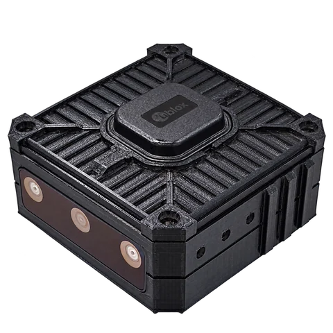
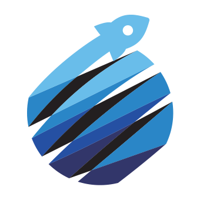

<title>GEO-X R7 패드 시안</title>
<meta content="cover" name="claude:viewport-fit-sides"/>
<meta charset="utf-8"/>
<link href="https://fonts.googleapis.com/css2?family=Noto+Sans+KR:wght@400;500;600;700&amp;display=swap" rel="stylesheet"/>
<style>

:root{--canvas:#EDF0F5;--surface:#FFFFFF;--sunken:#F3F5F8;--field:#F1F3F7;--fieldPressed:#E9ECF2;--text:#151B31;--textSecondary:#4B5570;--textSubtle:#5F6880;--border:#E7EAF0;--borderStrong:#838891;--primary:#1F52B8;--primaryPressed:#1A47A0;--onPrimary:#FFFFFF;--primaryTint:#E7EEFB;--primaryTintText:#1A47A0;--focusHalo:#1F52B83D;--success:#22704B;--successSoft:#E2F1E9;--successBorder:#A9D3BD;--warning:#8A5A06;--warningSoft:#FBF0DA;--warningBorder:#ECCA8C;--danger:#B3372C;--dangerPressed:#9A2E25;--onDanger:#FFFFFF;--dangerSoft:#FBE8E5;--dangerBorder:#F0B8B1;--infoBorder:#B9CBEF;--pending:#3D3A86;--pendingSoft:#E4E3F4;--pendingBorder:#C4C1E8;--neutral:#5D667B;--neutralSoft:#EEF0F4;--neutralBorder:#D9DEE7;--disabledFill:#E9ECF2;--disabledText:#5F6880;--switchTrackOff:#7D8598;--switchThumbOff:#FFFFFF;--switchThumbOn:#FFFFFF;--topBar:#FFFFFF;--onTopBar:#151B31;--onTopBarIcon:#4B5570;--topBarBorder:#E7EAF0;--nav:#FFFFFF;--navSelected:#1F52B8;--navUnselected:#5F6880;--navBorder:#E7EAF0;--navFocus:#1F52B8;--attention:#D0342C;--onAttention:#FFFFFF;--chromeSuccess:#22704B;--chromeWarning:#8A5A06;--chromeDanger:#B3372C;--chromeInfo:#1F52B8;--chromePending:#3D3A86;--chromeNeutral:#5D667B;--inverse:#151B31;--onInverse:#FFFFFF;--inverseAction:#8FB0F0;--scrim:#121A3D52;--mapPlate:#FFFFFF;--mapZone:#1F52B8;--mapTrailPrecise:#22704B;--mapTrailApproximate:#8A5A06;--mapTrailUnknown:#5D667B;--mapGap:#B3372C;--mapDevice:#121A3D;--mapPhone:#1F52B8;--mapCasing:#FFFFFF;--mapFocus:#1F52B8;--mediaStage:#000000;--mediaPlate:#000000B8;--mediaText:#FFFFFF;--mediaBadge:#1E1F21;--mediaLive:#88CCA5;--mediaDelayed:#E3BC7A;--mediaPending:#BDBFC4;--mediaFailed:#E9938C;--brandGreen:#29674E;--brandGreenLight:#64B993;--pageBg:#EDF0F5;--pageSurface:#FFFFFF;--pageText:#151B31;--pageMuted:#4B5570;--pageLine:#E7EAF0;--pageLink:#1F52B8;--pageAccent:#E7EEFB;color-scheme:light;}@media(prefers-color-scheme:dark){:root:not([data-theme="light"]){--pageBg:#161719;--pageSurface:#1E1F21;--pageText:#E8E9EC;--pageMuted:#BDBFC4;--pageLine:#323336;--pageLink:#8AADEC;--pageAccent:#242E40;color-scheme:dark;}}:root[data-theme="dark"]{--pageBg:#161719;--pageSurface:#1E1F21;--pageText:#E8E9EC;--pageMuted:#BDBFC4;--pageLine:#323336;--pageLink:#8AADEC;--pageAccent:#242E40;color-scheme:dark;}[data-palette="STANDARD"]{--canvas:#EDF0F5;--surface:#FFFFFF;--sunken:#F3F5F8;--field:#F1F3F7;--fieldPressed:#E9ECF2;--text:#151B31;--textSecondary:#4B5570;--textSubtle:#5F6880;--border:#E7EAF0;--borderStrong:#838891;--primary:#1F52B8;--primaryPressed:#1A47A0;--onPrimary:#FFFFFF;--primaryTint:#E7EEFB;--primaryTintText:#1A47A0;--focusHalo:#1F52B83D;--success:#22704B;--successSoft:#E2F1E9;--successBorder:#A9D3BD;--warning:#8A5A06;--warningSoft:#FBF0DA;--warningBorder:#ECCA8C;--danger:#B3372C;--dangerPressed:#9A2E25;--onDanger:#FFFFFF;--dangerSoft:#FBE8E5;--dangerBorder:#F0B8B1;--infoBorder:#B9CBEF;--pending:#3D3A86;--pendingSoft:#E4E3F4;--pendingBorder:#C4C1E8;--neutral:#5D667B;--neutralSoft:#EEF0F4;--neutralBorder:#D9DEE7;--disabledFill:#E9ECF2;--disabledText:#5F6880;--switchTrackOff:#7D8598;--switchThumbOff:#FFFFFF;--switchThumbOn:#FFFFFF;--topBar:#FFFFFF;--onTopBar:#151B31;--onTopBarIcon:#4B5570;--topBarBorder:#E7EAF0;--nav:#FFFFFF;--navSelected:#1F52B8;--navUnselected:#5F6880;--navBorder:#E7EAF0;--navFocus:#1F52B8;--attention:#D0342C;--onAttention:#FFFFFF;--chromeSuccess:#22704B;--chromeWarning:#8A5A06;--chromeDanger:#B3372C;--chromeInfo:#1F52B8;--chromePending:#3D3A86;--chromeNeutral:#5D667B;--inverse:#151B31;--onInverse:#FFFFFF;--inverseAction:#8FB0F0;--scrim:#121A3D52;--mapPlate:#FFFFFF;--heroBg:var(--inverse);--heroFg:var(--onInverse);--heroAction:var(--inverseAction);--heroOnAction:var(--inverse);--wordmark-original-display:block;--wordmark-tint-display:none;--shadow:0 4px 16px color-mix(in srgb,var(--text) 6%,transparent);--fixedSuccess:var(--mapTrailPrecise);--fixedWarning:var(--mapTrailApproximate);--fixedDanger:var(--mapGap);}[data-palette="NAVY_LIGHT"]{--canvas:#EDF0F5;--surface:#FFFFFF;--sunken:#F3F5F8;--field:#F1F3F7;--fieldPressed:#E9ECF2;--text:#151B31;--textSecondary:#4B5570;--textSubtle:#5F6880;--border:#E7EAF0;--borderStrong:#838891;--primary:#1F52B8;--primaryPressed:#1A47A0;--onPrimary:#FFFFFF;--primaryTint:#E7EEFB;--primaryTintText:#1A47A0;--focusHalo:#1F52B83D;--success:#22704B;--successSoft:#E2F1E9;--successBorder:#A9D3BD;--warning:#8A5A06;--warningSoft:#FBF0DA;--warningBorder:#ECCA8C;--danger:#B3372C;--dangerPressed:#9A2E25;--onDanger:#FFFFFF;--dangerSoft:#FBE8E5;--dangerBorder:#F0B8B1;--infoBorder:#B9CBEF;--pending:#3D3A86;--pendingSoft:#E4E3F4;--pendingBorder:#C4C1E8;--neutral:#5D667B;--neutralSoft:#EEF0F4;--neutralBorder:#D9DEE7;--disabledFill:#E9ECF2;--disabledText:#5F6880;--switchTrackOff:#7D8598;--switchThumbOff:#FFFFFF;--switchThumbOn:#FFFFFF;--topBar:#121A3D;--onTopBar:#FFFFFF;--onTopBarIcon:#AEB9D9;--topBarBorder:#00000000;--nav:#121A3D;--navSelected:#FFFFFF;--navUnselected:#AEB9D9;--navBorder:#00000000;--navFocus:#8FB0F0;--attention:#F08F86;--onAttention:#121A3D;--chromeSuccess:#88CCA5;--chromeWarning:#E3BC7A;--chromeDanger:#F08F86;--chromeInfo:#8FB0F0;--chromePending:#CCC8F3;--chromeNeutral:#AEB9D9;--inverse:#151B31;--onInverse:#FFFFFF;--inverseAction:#8FB0F0;--scrim:#121A3D52;--mapPlate:#FFFFFF;--heroBg:var(--inverse);--heroFg:var(--onInverse);--heroAction:var(--inverseAction);--heroOnAction:var(--inverse);--wordmark-original-display:block;--wordmark-tint-display:none;--shadow:0 4px 16px color-mix(in srgb,var(--text) 6%,transparent);--fixedSuccess:var(--mapTrailPrecise);--fixedWarning:var(--mapTrailApproximate);--fixedDanger:var(--mapGap);}[data-palette="HIGH_CONTRAST"]{--canvas:#FFFFFF;--surface:#FFFFFF;--sunken:#F2F4F7;--field:#F2F4F7;--fieldPressed:#E6E9EF;--text:#0B1022;--textSecondary:#283045;--textSubtle:#3B4256;--border:#C3C9D4;--borderStrong:#4D5466;--primary:#163E8F;--primaryPressed:#103170;--onPrimary:#FFFFFF;--primaryTint:#E3EBF9;--primaryTintText:#103170;--focusHalo:#163E8F52;--success:#0E5634;--successSoft:#DFF0E6;--successBorder:#0E5634;--warning:#5F3D00;--warningSoft:#FAEDD3;--warningBorder:#5F3D00;--danger:#8B1E15;--dangerPressed:#6F150E;--onDanger:#FFFFFF;--dangerSoft:#FBE4E1;--dangerBorder:#8B1E15;--infoBorder:#163E8F;--pending:#2C2970;--pendingSoft:#E5E4F5;--pendingBorder:#2C2970;--neutral:#3D4456;--neutralSoft:#ECEEF2;--neutralBorder:#3D4456;--disabledFill:#E6E9EF;--disabledText:#555D70;--switchTrackOff:#5E6577;--switchThumbOff:#FFFFFF;--switchThumbOn:#FFFFFF;--topBar:#FFFFFF;--onTopBar:#0B1022;--onTopBarIcon:#283045;--topBarBorder:#4D5466;--nav:#FFFFFF;--navSelected:#163E8F;--navUnselected:#5A6276;--navBorder:#4D5466;--navFocus:#163E8F;--attention:#B3261E;--onAttention:#FFFFFF;--chromeSuccess:#0E5634;--chromeWarning:#5F3D00;--chromeDanger:#8B1E15;--chromeInfo:#163E8F;--chromePending:#2C2970;--chromeNeutral:#3D4456;--inverse:#0B1022;--onInverse:#FFFFFF;--inverseAction:#A9C3F7;--scrim:#0B10227A;--mapPlate:#FFFFFF;--heroBg:var(--inverse);--heroFg:var(--onInverse);--heroAction:var(--inverseAction);--heroOnAction:var(--inverse);--wordmark-original-display:block;--wordmark-tint-display:none;--shadow:0 4px 16px color-mix(in srgb,var(--text) 6%,transparent);--fixedSuccess:var(--mapTrailPrecise);--fixedWarning:var(--mapTrailApproximate);--fixedDanger:var(--mapGap);}[data-palette="GRAPHITE"]{--canvas:#161719;--surface:#1E1F21;--sunken:#191B1D;--field:#292A2C;--fieldPressed:#303234;--text:#E8E9EC;--textSecondary:#BDBFC4;--textSubtle:#9EA2A7;--border:#323336;--borderStrong:#7E8289;--primary:#8AADEC;--primaryPressed:#A8C3F4;--onPrimary:#1E1F21;--primaryTint:#242E40;--primaryTintText:#B9CFF5;--focusHalo:#8AADEC52;--success:#88CCA5;--successSoft:#203026;--successBorder:#376048;--warning:#E3BC7A;--warningSoft:#332A1C;--warningBorder:#67522D;--danger:#E9938C;--dangerPressed:#F0A9A3;--onDanger:#1E1F21;--dangerSoft:#392626;--dangerBorder:#734844;--infoBorder:#435B85;--pending:#CCC8F3;--pendingSoft:#2D2B3F;--pendingBorder:#565176;--neutral:#ADB1B9;--neutralSoft:#2C2E31;--neutralBorder:#46494E;--disabledFill:#292A2C;--disabledText:#9EA2A7;--switchTrackOff:#7E8289;--switchThumbOff:#1E1F21;--switchThumbOn:#1E1F21;--topBar:#1E1F21;--onTopBar:#E8E9EC;--onTopBarIcon:#BDBFC4;--topBarBorder:#323336;--nav:#0E0F11;--navSelected:#A8C3F4;--navUnselected:#9EA2A7;--navBorder:#00000000;--navFocus:#9BBAF0;--attention:#F08F86;--onAttention:#161719;--chromeSuccess:#88CCA5;--chromeWarning:#E3BC7A;--chromeDanger:#E9938C;--chromeInfo:#8AADEC;--chromePending:#CCC8F3;--chromeNeutral:#ADB1B9;--inverse:#3D3E41;--onInverse:#E8E9EC;--inverseAction:#A8C3F4;--scrim:#05060899;--mapPlate:#1E1F21;--heroBg:var(--sunken);--heroFg:var(--text);--heroAction:var(--primary);--heroOnAction:var(--onPrimary);--wordmark-original-display:none;--wordmark-tint-display:block;--shadow:0 4px 16px color-mix(in srgb,var(--text) 6%,transparent);--fixedSuccess:var(--mapTrailPrecise);--fixedWarning:var(--mapTrailApproximate);--fixedDanger:var(--mapGap);}[data-palette="NAVY_DARK"]{--canvas:#13171F;--surface:#1B1F28;--sunken:#171B23;--field:#262A33;--fieldPressed:#2D323A;--text:#E6E9F0;--textSecondary:#BBBFC8;--textSubtle:#9DA1AB;--border:#2F333C;--borderStrong:#7D828D;--primary:#8BACEF;--primaryPressed:#A9C3F7;--onPrimary:#1B1F28;--primaryTint:#242F46;--primaryTintText:#BBCEF5;--focusHalo:#8BACEF52;--success:#88CCA5;--successSoft:#203026;--successBorder:#376048;--warning:#E3BC7A;--warningSoft:#332A1C;--warningBorder:#67522D;--danger:#E9938C;--dangerPressed:#F0A9A3;--onDanger:#1B1F28;--dangerSoft:#392626;--dangerBorder:#734844;--infoBorder:#455A85;--pending:#CCC8F3;--pendingSoft:#2D2B3F;--pendingBorder:#565176;--neutral:#ACB1BD;--neutralSoft:#292E38;--neutralBorder:#444955;--disabledFill:#262A33;--disabledText:#9DA1AB;--switchTrackOff:#7D828D;--switchThumbOff:#1B1F28;--switchThumbOn:#1B1F28;--topBar:#1B1F28;--onTopBar:#E6E9F0;--onTopBarIcon:#BBBFC8;--topBarBorder:#2F333C;--nav:#0C0F17;--navSelected:#A9C3F7;--navUnselected:#9DA1AB;--navBorder:#00000000;--navFocus:#9DB9F0;--attention:#F08F86;--onAttention:#13171F;--chromeSuccess:#88CCA5;--chromeWarning:#E3BC7A;--chromeDanger:#E9938C;--chromeInfo:#8BACEF;--chromePending:#CCC8F3;--chromeNeutral:#ACB1BD;--inverse:#3A3E48;--onInverse:#E6E9F0;--inverseAction:#A9C3F7;--scrim:#04060E99;--mapPlate:#1B1F28;--heroBg:var(--sunken);--heroFg:var(--text);--heroAction:var(--primary);--heroOnAction:var(--onPrimary);--wordmark-original-display:none;--wordmark-tint-display:block;--shadow:0 4px 16px color-mix(in srgb,var(--text) 6%,transparent);--fixedSuccess:var(--mapTrailPrecise);--fixedWarning:var(--mapTrailApproximate);--fixedDanger:var(--mapGap);}[data-palette="MIST"]{--canvas:#26282B;--surface:#2F3033;--sunken:#2A2B2E;--field:#3A3C3F;--fieldPressed:#424447;--text:#EBEDEF;--textSecondary:#CACCD0;--textSubtle:#B3B6BB;--border:#444649;--borderStrong:#90949A;--primary:#9ABBF6;--primaryPressed:#B9D2FE;--onPrimary:#2F3033;--primaryTint:#374154;--primaryTintText:#C1D7FD;--focusHalo:#9ABBF652;--success:#91D6AE;--successSoft:#314238;--successBorder:#477159;--warning:#EDC684;--warningSoft:#453C2D;--warningBorder:#78623D;--danger:#F39D95;--dangerPressed:#F7B2AB;--onDanger:#2F3033;--dangerSoft:#4B3837;--dangerBorder:#855854;--infoBorder:#546C97;--pending:#D5D0FC;--pendingSoft:#3F3D52;--pendingBorder:#676288;--neutral:#BBBFC7;--neutralSoft:#3D4044;--neutralBorder:#56595F;--disabledFill:#3A3C3F;--disabledText:#B3B6BB;--switchTrackOff:#90949A;--switchThumbOff:#2F3033;--switchThumbOn:#2F3033;--topBar:#2F3033;--onTopBar:#EBEDEF;--onTopBarIcon:#CACCD0;--topBarBorder:#444649;--nav:#1E1F22;--navSelected:#B9D2FE;--navUnselected:#B3B6BB;--navBorder:#00000000;--navFocus:#A5C3FA;--attention:#FB988F;--onAttention:#26282B;--chromeSuccess:#91D6AE;--chromeWarning:#EDC684;--chromeDanger:#F39D95;--chromeInfo:#9ABBF6;--chromePending:#D5D0FC;--chromeNeutral:#BBBFC7;--inverse:#4F5155;--onInverse:#EBEDEF;--inverseAction:#B9D2FE;--scrim:#06070999;--mapPlate:#2F3033;--heroBg:var(--sunken);--heroFg:var(--text);--heroAction:var(--primary);--heroOnAction:var(--onPrimary);--wordmark-original-display:none;--wordmark-tint-display:block;--shadow:0 4px 16px color-mix(in srgb,var(--text) 6%,transparent);--fixedSuccess:var(--mapTrailPrecise);--fixedWarning:var(--mapTrailApproximate);--fixedDanger:var(--mapGap);}
*{box-sizing:border-box}body{margin:0;background:var(--pageBg);color:var(--pageText);font:16px/1.5 "Noto Sans KR",sans-serif;word-break:keep-all;overflow-wrap:anywhere}h1,h2,h3,h4,p,figure,dl,dd{margin:0}button,input,summary{font:inherit}button{border:0;background:none;color:inherit;text-align:inherit;padding:0;cursor:default}a{color:inherit;text-decoration:none}svg{display:block}strong{font-weight:700}button:focus-visible,input:focus-visible,summary:focus-visible,a:focus-visible,[tabindex]:focus-visible{outline:2px solid var(--primary);outline-offset:3px}.library{position:absolute;width:0;height:0;overflow:hidden}.ico{width:24px;height:24px;flex:0 0 24px;fill:none;stroke:currentColor;stroke-width:1.8;stroke-linecap:round;stroke-linejoin:round}.num{font-variant-numeric:tabular-nums;letter-spacing:-.6px;font-weight:700}
.page{max-width:1856px;margin:auto;padding-block:48px 64px;padding-left:max(16px,env(safe-area-inset-left,0px));padding-right:max(16px,env(safe-area-inset-right,0px))}.intro{display:grid;grid-template-columns:1fr auto;gap:32px;padding-bottom:40px;border-bottom:1px solid var(--pageLine)}.eyebrow{font-size:13px;font-weight:700;letter-spacing:2px;color:var(--pageMuted)}.intro h1{font-size:52px;line-height:1.25;letter-spacing:-2px;margin:16px 0 20px}.intro h1 em{font-style:normal;color:var(--pageLink)}.intro p{font-size:17px;line-height:1.9;color:var(--pageMuted);max-width:800px}.edition{align-self:center;text-align:right}.edition strong{display:block;font-size:52px;letter-spacing:-2px}.edition span{font-size:14px;color:var(--pageMuted)}.page-nav{display:flex;gap:8px;flex-wrap:wrap;margin:24px 0 40px}.page-nav a{display:flex;align-items:center;min-height:48px;padding:8px 20px;border-radius:12px;background:var(--pageSurface);font-size:14px;font-weight:600}.page-nav a:first-child{background:var(--pageAccent);color:var(--pageLink)}.section-kicker{font:600 13px/20px "Noto Sans KR",sans-serif;letter-spacing:1px;color:var(--pageLink);margin-bottom:8px}.section-heading{display:flex;align-items:baseline;justify-content:space-between;gap:16px;margin-bottom:24px}.section-heading h2{font-size:32px;line-height:44px;letter-spacing:-1px}.section-heading p{font-size:14px;color:var(--pageMuted)}.design-system{padding-bottom:48px}.system-grid{display:grid;grid-template-columns:repeat(2,minmax(0,1fr));gap:24px}.system-panel{min-width:0;background:var(--pageSurface);border-radius:20px;padding:28px}.system-panel>h3{font-size:20px;line-height:28px;margin-bottom:12px;letter-spacing:-.4px}.system-panel>p{font-size:14px;line-height:24px;color:var(--pageMuted);margin-bottom:20px}.system-wide{grid-column:1/-1}.system-note{margin-top:20px;font-size:13px;line-height:22px;color:var(--pageMuted)}.palette-list{display:grid;grid-template-columns:repeat(3,minmax(0,1fr));gap:12px}.palette-sample{background:var(--canvas);color:var(--text);border-radius:16px;padding:16px;min-width:0}.palette-sample strong{display:block;font-size:14px;margin-bottom:12px}.palette-dots{display:flex;gap:8px;align-items:center}.palette-dots i{width:32px;height:32px;border-radius:8px;background:var(--surface);border:1px solid var(--borderStrong)}.palette-dots i:nth-child(2){background:var(--sunken)}.palette-dots i:nth-child(3){background:var(--primary);border-color:var(--primary)}.palette-values{font-size:12px;line-height:20px;margin-top:12px;color:var(--textSecondary);font-variant-numeric:tabular-nums}.color-rule{display:grid;grid-template-columns:1fr 1fr;gap:16px;margin-top:20px}.color-rule>div{padding:16px;border-radius:12px;background:var(--pageBg)}.color-rule strong{display:block;font-size:14px;margin-bottom:6px}.color-rule p{font-size:13px;line-height:22px;color:var(--pageMuted)}.type-hero{font-size:64px;font-weight:700;line-height:1.1;letter-spacing:-3px;margin-bottom:20px}.type-hero span{font-size:32px;letter-spacing:-1px}.type-table{width:100%;border-collapse:collapse}.type-table td{padding:12px 0;border-bottom:1px solid var(--pageLine)}.type-table td:last-child{text-align:right;font-size:13px;color:var(--pageMuted);font-variant-numeric:tabular-nums}.spacing-ruler{display:flex;align-items:flex-end;gap:16px;margin:24px 0}.spacing-ruler div{font-size:13px;color:var(--pageMuted);text-align:center}.spacing-ruler i{display:block;width:var(--size);height:var(--size);background:var(--pageAccent);border-radius:4px;margin:0 auto 8px}.surface-stack{background:var(--canvas);color:var(--text);padding:20px;border-radius:16px}.surface-stack .surface-demo{padding:20px;background:var(--surface);border-radius:16px;box-shadow:var(--shadow)}.surface-demo>div{padding:12px;background:var(--sunken);border-radius:12px;margin-top:12px;font-size:14px}.surface-stack small{display:block;font-size:13px;color:var(--textSecondary);margin-top:8px}.component-grid{display:grid;grid-template-columns:repeat(3,minmax(0,1fr));gap:24px}.component-grid>div{min-width:0}.component-grid h4{font-size:14px;margin-bottom:12px;color:var(--textSecondary)}.component-grid h4:not(:first-child){margin-top:24px}.component-stage{padding:20px;border-radius:16px;background:var(--canvas);color:var(--text)}.component-stage .card{box-shadow:var(--shadow)}.component-stage .hero{margin-bottom:16px}.component-stage .map-card{height:200px}.component-stage .metrics{margin-top:16px}.align-grid{display:grid;grid-template-columns:1fr 1fr;gap:24px}.align-example{padding:20px;border-radius:16px;background-color:var(--canvas);color:var(--text);background-image:linear-gradient(to right,transparent 23px,var(--border) 24px),linear-gradient(to bottom,transparent 23px,var(--border) 24px);background-size:24px 24px;min-width:0}.align-example h4{font-size:14px;margin-bottom:12px}.align-example p{font-size:13px;color:var(--textSecondary);margin-top:12px;line-height:22px}.align-example .card{max-width:364px;margin:auto}.bad-row{display:flex;align-items:flex-start;gap:12px;padding:16px 0;min-height:72px;border-bottom:1px dashed var(--borderStrong)}.bad-row .bad-copy{flex:1;font-size:16px;line-height:24px;min-width:0}.bad-state{border-radius:999px;background:var(--neutralSoft);padding:2px 10px;font-size:13px;line-height:20px;white-space:nowrap}.bad-row:nth-child(2) .bad-state{margin-top:12px}.bad-filters{display:flex;gap:8px;margin-top:16px;flex-wrap:wrap}.bad-filter{padding:8px 12px;border-radius:999px;background:var(--surface);font-size:13px;display:flex;align-items:center;gap:8px}.bad-filter:first-child{background:var(--primaryTint);color:var(--primaryTintText)}.alignment-caption{font-size:13px;line-height:22px;margin-top:16px;color:var(--pageMuted)}.guide-logo-grid{display:grid;grid-template-columns:1fr 1fr 1fr;gap:32px;align-items:center}.logo-original{display:block;width:240px;max-width:100%;height:auto}.logo-stage{background:var(--surface);color:var(--text);padding:24px;border-radius:16px;min-height:196px;display:flex;align-items:center;justify-content:center}.loader-example{text-align:center}.loader-example p{font-size:14px;color:var(--textSecondary);margin-top:16px}.logo-rules{font-size:14px;line-height:28px;color:var(--pageMuted)}.logo-rules strong{color:var(--pageText)}.brand-assets{display:flex;gap:20px;align-items:center;margin-top:20px}.brand-assets img{width:48px;height:48px;object-fit:contain}.motion-timeline{display:grid;grid-template-columns:7fr 2fr 1fr;margin-top:24px;gap:4px}.motion-timeline span{padding:12px;background:var(--pageBg);font-size:12px;line-height:20px;color:var(--pageMuted);border-radius:8px}.token-details{margin-top:20px}.token-details summary{min-height:48px;display:flex;align-items:center;font-size:14px;font-weight:600}.token-scroll{overflow-x:auto;max-width:100%}.token-table{font-size:12px;line-height:20px;border-collapse:collapse;min-width:760px;width:100%;font-variant-numeric:tabular-nums}.token-table td,.token-table th{padding:8px;text-align:left;border-bottom:1px solid var(--pageLine)}
.gallery-section{padding-top:40px;border-top:1px solid var(--pageLine);margin-top:16px}.gallery{display:flex;flex-wrap:wrap;justify-content:center;gap:40px 32px;align-items:flex-start}.board{flex:0 0 auto;width:412px;max-width:100%;min-width:0}.board>figcaption{min-height:84px;padding-bottom:16px}.board-heading{display:flex;align-items:center;gap:12px;margin-bottom:6px}.board-number{font-size:13px;line-height:28px;min-width:32px;text-align:center;color:var(--pageLink);font-weight:700}.board>figcaption h2{font-size:18px;line-height:28px}.board>figcaption p{font-size:13px;line-height:20px;color:var(--pageMuted);padding-left:44px}.phone{width:412px;height:882px;display:flex;flex-direction:column;position:relative;flex:none;overflow:hidden;background:var(--canvas);color:var(--text);border-radius:28px;box-shadow:var(--shadow);outline:1px solid var(--pageLine);font:16px/24px "Noto Sans KR",sans-serif;color-scheme:light}.phone[data-palette=GRAPHITE],.phone[data-palette=NAVY_DARK]{color-scheme:dark}.phone h2{font-size:24px;line-height:32px;font-weight:700;letter-spacing:-.5px}.phone h3{font-size:18px;line-height:28px;font-weight:700;letter-spacing:-.2px}.phone h4{font-size:16px;line-height:24px;font-weight:700}.statusbar{height:36px;flex:0 0 36px;display:flex;align-items:center;justify-content:space-between;padding-inline:24px;background:var(--topBar);color:var(--onTopBar);font-size:13px;font-weight:600}.statusbar>span:last-child{display:flex;gap:4px}.statusbar .ico{width:16px;height:16px;flex-basis:16px}.scene{position:relative;display:flex;flex-direction:column;flex:1;min-height:0}.topbar{height:64px;flex:0 0 64px;display:flex;align-items:center;gap:8px;padding:8px 16px 8px 24px;background:var(--topBar);color:var(--onTopBar)}.topbar.detail{padding:4px 12px 4px 8px;height:56px;flex-basis:56px}.topbar>h2{flex:1;min-width:0}.topbar .controls{display:flex;align-items:center;gap:8px}.iconbtn{width:48px;min-width:48px;height:48px;min-height:48px;display:inline-flex;align-items:center;justify-content:center;border-radius:12px;color:inherit;flex-shrink:0}.topbar .iconbtn{color:var(--onTopBarIcon)}.bell{position:relative}.bell:after{content:"";position:absolute;width:8px;height:8px;border-radius:50%;background:var(--attention);right:12px;top:10px}.device-switch{display:flex;align-items:center;gap:4px;min-height:48px;font-size:14px;font-weight:600}.device-switch .ico{width:20px;flex-basis:20px}.scroll{min-height:0;flex:1;overflow-y:auto;overflow-x:hidden;padding:16px 24px 24px;scrollbar-width:thin;scrollbar-color:var(--borderStrong) transparent}.scroll>*+*{margin-top:24px}.meta{font-size:14px;line-height:20px;color:var(--textSecondary);font-weight:400}.small{font-size:13px;line-height:20px}.section-head{display:flex;align-items:center;justify-content:space-between;gap:8px;margin-bottom:12px;min-height:28px}.section-head .textbtn{font-size:14px}.textbtn{min-width:48px;min-height:48px;padding:8px;display:inline-flex;align-items:center;justify-content:center;gap:8px;color:var(--primary);font-weight:600;flex-shrink:0}.card{padding:16px;border-radius:16px;background:var(--surface);box-shadow:var(--shadow)}.card>*+*{margin-top:12px}.card-head{display:grid;grid-template-columns:minmax(0,1fr) auto;align-items:center;gap:8px}.card-head h3{min-width:0}.device-card{padding:16px}.device-head{display:flex;align-items:center;gap:12px}.device-head>div{flex:1;min-width:0}.device-photo{width:72px;height:64px;object-fit:contain;flex-shrink:0}.device-head .meta{margin-top:4px;font-size:13px;white-space:nowrap}.inline{display:flex;align-items:center;gap:16px;flex-wrap:wrap}.between{display:flex;align-items:center;justify-content:space-between;gap:8px}.state{display:inline-flex;align-items:center;justify-content:flex-end;gap:5px;height:24px;white-space:nowrap;font-size:13px;line-height:20px;font-weight:500;color:var(--neutral);flex:none}.state:before{content:"";display:block;width:5px;height:5px;flex:0 0 5px;border-radius:50%;background:currentColor}.state.success{color:var(--success)}.state.warning{color:var(--warning)}.state.danger{color:var(--danger)}.state.pending{color:var(--pending)}.state.primary{color:var(--primary)}.head-state{height:24px;min-width:64px;justify-content:center;border-radius:8px;padding-inline:8px;background:var(--sunken)}.head-state.success{background:var(--successSoft)}.head-state.pending{background:var(--pendingSoft)}.head-state.primary{background:var(--primaryTint);color:var(--primaryTintText)}.tile{display:inline-flex;align-items:center;justify-content:center;width:40px;height:40px;border-radius:12px;flex:0 0 40px;background:var(--sunken);color:var(--textSecondary)}.tile.warning{background:var(--warningSoft);color:var(--warning)}.tile.danger{background:var(--dangerSoft);color:var(--danger)}.metrics{display:grid;grid-template-columns:repeat(4,minmax(0,1fr));gap:8px}.metric{min-width:0;height:80px;background:var(--sunken);border-radius:12px;padding:8px}.metric .label{font-size:13px;line-height:20px;color:var(--textSecondary)}.metric .value{font-size:28px;line-height:36px;white-space:nowrap;color:var(--text);letter-spacing:-1px;margin-top:4px}.unit{font-size:13px;line-height:20px;font-weight:500;letter-spacing:0;margin-left:2px}.hero,.time-card,.quality-total{background:var(--heroBg);color:var(--heroFg);padding:20px;border-radius:16px;box-shadow:var(--shadow)}.hero>*+*{margin-top:12px}.hero .hero-label{display:flex;align-items:center;gap:8px;font-size:13px;line-height:20px}.hero .hero-label .ico{width:16px;height:16px;flex-basis:16px}.hero h3{font-size:22px;line-height:32px;letter-spacing:-.4px}.hero .meta,.hero .state,.time-card .meta,.quality-total .meta{color:var(--heroFg)}.hero .head-state{background:transparent;outline:1px solid var(--heroFg);height:24px}.hero .timer{font-size:40px;line-height:48px;letter-spacing:-1px}.hero .big{font-size:28px;line-height:36px}.hero .inline{gap:20px}.btn{display:flex;justify-content:center;align-items:center;width:100%;min-width:48px;min-height:56px;padding:12px 16px;gap:8px;border-radius:12px;font-weight:600;font-size:16px;line-height:24px;text-align:center}.btn.primary{background:var(--primary);color:var(--onPrimary)}.btn.secondary{background:var(--surface);color:var(--text);border:1px solid var(--borderStrong);min-height:48px}.btn.danger{background:var(--dangerSoft);color:var(--danger);border:1px solid var(--dangerBorder)}.hero .btn.primary{background:var(--heroAction);color:var(--heroOnAction)}.hero .btn.danger{background:transparent;color:var(--heroFg);border-color:var(--heroFg)}.hero .btn.secondary{background:transparent;color:var(--heroFg);border-color:var(--heroFg)}.btn:disabled{background:var(--disabledFill);color:var(--disabledText);border:0}.actions{display:grid;grid-template-columns:1fr 1fr;gap:8px}.actions .btn{height:56px}.quick-grid{display:grid;grid-template-columns:repeat(5,minmax(0,1fr));gap:8px}.quick{display:flex;min-width:48px;min-height:88px;align-items:center;flex-direction:column;gap:8px;font-size:13px;line-height:20px;text-align:center;color:var(--textSecondary)}.quick .tile{background:var(--surface);color:var(--textSecondary);box-shadow:var(--shadow)}.recent h4{font-size:16px}.recent>.meta{margin-top:4px}.filters{display:flex;gap:8px;overflow-x:auto;flex-wrap:nowrap;padding:0 0 4px;scrollbar-width:none;max-width:100%}.filter{height:48px;min-height:48px;min-width:48px;flex:0 0 auto;display:inline-flex;align-items:center;justify-content:center;padding:8px 12px;border-radius:999px;background:var(--surface);color:var(--textSecondary);font-size:13px;line-height:20px;font-weight:500;white-space:nowrap}.filter.selected{background:var(--primary);color:var(--onPrimary)}.list-card{padding-block:0}.list-card>*+*{margin-top:0}.row{display:grid;width:100%;grid-template-columns:40px minmax(0,1fr) 24px;column-gap:12px;align-items:start;min-height:80px;padding:16px 0}.row.has-state{grid-template-columns:40px minmax(0,1fr) 72px 24px;column-gap:8px}.row+.row,.action-row+.action-row{border-top:1px solid var(--border)}.row>.tile,.row>.row-photo{align-self:center}.row .copy{min-width:0;display:block}.row .title{display:block;font-size:16px;line-height:24px;font-weight:500}.row .meta{display:block;margin-top:4px}.row>.state{width:72px;max-width:72px;align-self:start;height:24px;justify-content:flex-end}.row>.chev{align-self:start;color:var(--textSecondary)}.row-photo{width:40px;height:40px;object-fit:contain}.action-row{display:flex;gap:4px;align-items:stretch}.action-row .row{flex:1;min-width:0;grid-template-columns:40px minmax(0,1fr);column-gap:12px}.action-row .row>.chev{display:none}.action-row>.textbtn{width:56px;flex:0 0 56px;font-size:13px;align-self:flex-start;min-height:56px;margin-top:0}.facts{display:grid;grid-template-columns:104px minmax(0,1fr);gap:12px;font-size:14px;line-height:24px}.facts dt{color:var(--textSecondary)}.facts dd{min-width:0;overflow-wrap:anywhere}.tabbar{height:72px;flex:0 0 72px;display:grid;grid-template-columns:repeat(4,minmax(0,1fr));background:var(--nav);color:var(--navUnselected);border-top:1px solid var(--navBorder);padding:4px 8px}.tab{min-height:64px;min-width:48px;display:flex;position:relative;flex-direction:column;align-items:center;justify-content:center;gap:4px;font-size:13px;line-height:20px}.tab-plate{height:28px;width:56px;display:flex;align-items:center;justify-content:center;border-radius:8px}.tab.selected{color:var(--navSelected);font-weight:600}.tab.selected .tab-plate{background:var(--primaryTint)}.dot{position:absolute;top:6px;left:calc(50% + 14px);width:8px;height:8px;border-radius:50%;background:var(--attention)}.system-nav{height:48px;flex:0 0 48px;display:flex;justify-content:space-evenly;align-items:center;background:var(--nav);color:var(--navUnselected)}.system-nav .ico{width:20px;height:20px}.footer{flex-shrink:0;padding:12px 24px;background:var(--surface);border-top:1px solid var(--border)}.footer>.meta{margin-bottom:8px}.note{font-size:14px;line-height:24px;color:var(--textSecondary)}.note.yellow{background:var(--warningSoft);color:var(--warning);padding:16px;border-radius:12px}.empty{background:var(--surface);border-radius:16px;padding:24px;box-shadow:var(--shadow)}.empty>*+*{margin-top:12px}.empty h3{margin-top:20px}.map-card{position:relative;height:200px;border-radius:16px;overflow:hidden;background:var(--sunken)}.map-card .map-art{display:block;width:100%;height:100%}.map-card>.state{position:absolute;left:12px;top:12px;padding:4px 8px;height:28px;border-radius:8px;background:var(--mapPlate);color:var(--success)}.map-open{position:absolute;right:12px;top:12px;background:var(--mapPlate);color:var(--text)}.attribution{position:absolute;bottom:8px;left:8px;padding:0 4px;font-size:10px;line-height:16px;font-weight:700;background:var(--mapPlate);color:var(--textSecondary);border-radius:4px}.map-ground{fill:var(--sunken)}.map-block{fill:var(--border)}.map-park{fill:var(--fieldPressed)}.map-water{fill:var(--primaryTint)}.map-road{stroke:var(--surface);stroke-width:12;fill:none}.map-label{fill:var(--textSecondary);font-size:12px}.map-follow{fill:var(--mapDevice)}.map-caption{font-size:13px;line-height:20px;color:var(--textSecondary);margin-top:8px!important}.run-map{height:240px}.run-scroll>*+*{margin-top:16px}.run-scroll .row>.copy{min-width:0}.time-card .clock{font-size:40px;line-height:48px;letter-spacing:-1px;margin-top:4px}.time-details{display:flex;justify-content:space-between;align-items:center;margin-top:8px}.time-details .amount{font-size:28px;line-height:36px}.time-card{padding:20px}.receipt{background:var(--surface);padding:16px;border-radius:16px;box-shadow:var(--shadow)}.receipt-title{display:flex;align-items:center;justify-content:space-between;margin-bottom:20px}.receipt-track{display:grid;grid-template-columns:repeat(4,minmax(0,1fr));gap:0;margin-top:16px;position:relative}.receipt-cell{display:flex;flex-direction:column;align-items:center;position:relative;text-align:center;min-width:0;font-size:13px;line-height:20px}.receipt-cell:before{content:"";position:absolute;left:0;right:0;top:5px;height:1px;background:var(--borderStrong)}.receipt-cell:first-child:before{left:50%}.receipt-cell:last-child:before{right:50%}.step-dot{width:12px;height:12px;border-radius:50%;background:var(--surface);border:2px solid var(--borderStrong);z-index:1;margin-bottom:8px}.receipt-cell.done .step-dot{background:var(--success);border-color:var(--success)}.receipt-cell strong{font-size:13px;line-height:20px;font-weight:500}.receipt-cell small{font-size:12px;line-height:20px;color:var(--textSecondary);margin-top:2px}.receipt-cell.wait small{color:var(--pending)}.receipt-evidence{margin-top:20px;padding-top:16px;border-top:1px solid var(--border)}.receipt-evidence .facts{grid-template-columns:100px 1fr;gap:8px;font-size:13px;line-height:20px}.receipt-mini .receipt-track{margin-top:16px}.stat-grid{display:grid;grid-template-columns:1fr 1fr;gap:12px}.stat-card{background:var(--surface);padding:16px;border-radius:16px}.stat-card .value{font-size:32px;line-height:40px;margin-top:8px}.stat-card p{margin-top:8px;font-size:13px}.quality-total .value{font-size:40px;line-height:48px;margin-top:4px}.quality-bar{display:flex;height:8px;gap:2px;border-radius:8px;overflow:hidden;margin-top:12px}.quality-bar span:nth-child(1){width:96%;background:var(--fixedSuccess)}.quality-bar span:nth-child(2){width:2.4%;background:var(--fixedWarning)}.quality-bar span:nth-child(3){flex:1;background:var(--fixedDanger)}.quality-item{display:flex;gap:12px;align-items:center;min-height:80px;font-size:14px}.quality-item+.quality-item{border-top:1px solid var(--border)}.quality-item>span:not(.tile){flex:1}.quality-item strong{font-variant-numeric:tabular-nums}.quality-item .tile{background:var(--sunken);color:var(--textSecondary)}.danger-group{background:var(--dangerSoft);border-radius:16px;padding:16px;color:var(--danger)}.danger-group .row{color:var(--danger)}.danger-group .row .tile{background:transparent;color:var(--danger)}.danger-group .meta{color:var(--danger)}.danger-group .row+.row{border-top:1px solid var(--dangerBorder)}.warn-card{background:var(--warningSoft);border-radius:16px;padding:0 16px;color:var(--warning);box-shadow:var(--shadow)}.warn-card .meta,.warn-card .textbtn{color:var(--warning)}.warn-card .tile{background:transparent;color:var(--warning)}.warn-card .action-row+.action-row{border-top-color:var(--warningBorder)}.failure{padding:16px;background:var(--dangerSoft);color:var(--danger);border-radius:16px}.failure p{font-size:14px;line-height:24px;margin-top:12px}.failure .textbtn{color:var(--danger)}.failure .tile{background:transparent;color:var(--danger)}.failure .inline{gap:12px}.failure h3{font-size:16px}.sheet-layer{position:absolute;inset:0;background:var(--scrim);z-index:10;display:flex;align-items:flex-end}.sheet{background:var(--canvas);border-radius:24px 24px 0 0;width:100%;max-height:100%;display:flex;flex-direction:column;min-height:0;overflow:hidden}.handle{height:4px;width:32px;border-radius:4px;background:var(--borderStrong);flex-shrink:0;align-self:center;margin:8px auto 4px}.sheet-head{display:flex;align-items:center;justify-content:space-between;padding:0 16px 4px 24px;flex-shrink:0;min-height:56px}.sheet-head h3{font-size:18px}.sheet .scroll{padding-top:8px}.sheet .scroll>*+*{margin-top:20px}.sheet .footer{background:var(--surface)}.sheet .footer .meta{font-size:13px;line-height:20px}.map-full{flex:1;min-height:0;position:relative;overflow:hidden;background:var(--sunken)}.map-full>.map-art{height:100%;width:100%;position:absolute;inset:0}.map-controls{position:absolute;right:16px;top:16px;display:flex;flex-direction:column;gap:8px}.map-controls .iconbtn{background:var(--mapPlate);color:var(--text);box-shadow:var(--shadow)}.map-panel{position:relative;flex-shrink:0;background:var(--surface);border-radius:24px 24px 0 0;padding:4px 24px 16px;margin-top:-20px;box-shadow:var(--shadow)}.panel-head{display:flex;align-items:center;justify-content:space-between}.map-panel .facts{margin-top:12px}.toggle-row{display:flex;gap:12px;align-items:center;width:100%;min-height:56px;font-size:14px}.toggle{margin-left:auto;width:48px;height:28px;border:1px solid var(--switchTrackOff);border-radius:12px;display:flex;align-items:center;padding:3px;background:var(--field)}.toggle:before{content:"";width:20px;height:20px;background:var(--switchTrackOff);border-radius:8px}.media{background:var(--mediaStage);color:var(--mediaText)}.media .statusbar,.media .topbar,.media .system-nav{background:var(--mediaStage);color:var(--mediaText)}.media .topbar .iconbtn{color:var(--mediaText)}.media .meta{color:var(--mediaPending)}.camera-body{position:relative;min-height:0;flex:1;display:flex;flex-direction:column;justify-content:center;gap:24px}.camera-stage{position:relative;width:100%;height:350px;flex-shrink:0;background:var(--mediaStage)}.road-art{display:block;width:100%;height:100%}.camera-stage .media-plate{position:absolute;left:16px;top:16px}.media-plate{display:inline-flex;align-items:center;gap:8px;padding:4px 8px;background:var(--mediaBadge);border-radius:8px;color:var(--mediaText);font-size:14px;line-height:24px}.media-plate.yellow{color:var(--mediaDelayed)}.camera-hud{padding:16px 24px}.camera-hud .between{align-items:flex-start}.camera-hud p{margin-top:8px}.capture-footer{padding:16px 24px 20px;display:flex;align-items:center;justify-content:space-between;background:var(--mediaStage);gap:12px}.capture-footer .textbtn{color:var(--mediaText);font-size:14px}.shutter{width:72px;height:72px;border-radius:50%;border:2px solid var(--mediaText);display:flex;align-items:center;justify-content:center;flex-shrink:0;position:relative}.shutter:before{content:"";width:56px;height:56px;background:var(--mediaText);border-radius:50%}.shutter .ico{position:absolute;color:var(--mediaStage);width:28px;height:28px}.shutter:disabled:before{background:var(--mediaPending)}.shutter:disabled{border-color:var(--mediaPending)}.media-subtitle{padding-inline:24px}.sending .between .num{font-size:32px;line-height:40px}.sending .progress{height:8px;border-radius:8px;overflow:hidden;background:var(--heroFg);margin-top:12px}.progress span{height:100%;display:block;width:56%;background:var(--heroAction)}.sending .inline{margin-bottom:8px}.sending .btn{margin-top:16px}.file-tools>*+*{margin-top:12px}.search{display:flex;align-items:center;gap:12px;border:1px solid var(--borderStrong);border-radius:12px;background:var(--field);height:56px;padding:0 12px;color:var(--textSecondary)}.search input{width:100%;height:48px;min-width:0;border:0;outline:0;color:var(--text);background:none;font-size:16px}.search input::placeholder{color:var(--textSecondary);opacity:1}.file-filters{gap:8px}.file-list{display:flex;flex-direction:column;gap:8px}.file-row{display:flex;align-items:center;gap:8px;min-height:88px;padding:12px 8px;border-radius:12px;background:var(--surface);border:1px solid transparent}.file-row.selected{background:var(--primaryTint);border-color:var(--primary)}.select-file{width:48px;min-width:48px;min-height:56px;display:flex;align-items:center;justify-content:center}.radio{width:20px;height:20px;border:1.5px solid var(--borderStrong);border-radius:50%;display:flex;align-items:center;justify-content:center}.selected .radio{border-color:var(--primary);background:var(--primary);color:var(--onPrimary)}.radio .ico{width:16px;height:16px;flex-basis:16px}.file-thumb{width:48px;height:48px;flex-shrink:0;border-radius:8px;overflow:hidden;background:var(--sunken)}.file-name{font-size:14px;line-height:20px;font-weight:500;overflow-wrap:anywhere;word-break:normal;display:block}.file-info{flex:1;min-width:0}.file-info .meta{font-size:13px;margin-top:4px}.file-footer .selected-summary{display:flex;align-items:flex-start;gap:12px;margin-bottom:12px}.file-footer .selected-summary p{flex:1;min-width:0}.file-footer .server-summary{font-size:14px;line-height:20px;margin-bottom:12px;color:var(--textSecondary)}.preview-tools{display:flex;align-items:center;gap:8px;background:var(--mediaBadge);border:1px solid var(--mediaPending);border-radius:12px;padding:4px;width:max-content;margin:16px 24px 0 auto}.preview-body{flex:1;min-height:0;overflow:auto}.preview-image{height:330px;margin:24px 0;position:relative}.preview-image .dimension{position:absolute;bottom:8px;left:16px}.preview-info{margin:0 24px 24px;background:var(--mediaBadge);border-radius:16px;padding:16px}.preview-info .facts{font-size:14px;line-height:24px;grid-template-columns:72px 1fr;margin-top:16px}.preview-info .facts dt{color:var(--mediaPending)}.preview-info h3{font-size:16px;overflow-wrap:anywhere}.theme-preview{display:flex;width:100%;align-items:center;gap:16px}.mini-phone{width:76px;height:104px;flex:0 0 76px;background:var(--canvas);border:1px solid var(--borderStrong);border-radius:12px;padding:8px}.mini-line{height:8px;width:32px;border-radius:4px;background:var(--text);margin-bottom:8px}.mini-hero{height:32px;background:var(--inverse);border-radius:8px;margin-bottom:8px}.mini-squares{display:flex;gap:4px}.mini-squares i{height:16px;width:16px;border-radius:4px;background:var(--field)}.theme-preview .copy{flex:1;min-width:0}.theme-preview .meta{margin-top:4px}.theme-preview .state{margin-top:8px}.theme-preview .ico{color:var(--textSecondary)}.setting-section+.setting-section{margin-top:24px}.notification{display:flex;align-items:flex-start;gap:12px;background:var(--surface);padding:16px;border-radius:16px;box-shadow:var(--shadow)}.notification+.notification{margin-top:12px}.notification>.copy{flex:1;min-width:0;min-height:80px}.notification-title{display:block;font-size:16px;line-height:24px;font-weight:600}.notification-message{display:block;font-size:14px;line-height:24px;margin-top:8px;color:var(--textSecondary)}.notification time{display:block;font-size:13px;line-height:20px;margin-top:12px;color:var(--textSecondary)}.notification .iconbtn{margin:-8px -8px 0 0;color:var(--textSecondary)}.new-dot{display:inline-block;width:6px;height:6px;vertical-align:middle;background:var(--attention);border-radius:50%;margin-left:4px}
.symbol-loader{width:128px;height:128px;display:inline-block;position:relative;flex:none}.symbol-loader img{position:absolute;inset:0;width:100%;height:100%;object-fit:contain}.symbol-loader .symbol-base{opacity:.16}.symbol-loader .symbol-reveal{animation:symbol-reveal 2400ms linear infinite}.symbol-loader.small-loader{width:40px;height:40px}.symbol-loader.guide-loader{width:112px;height:112px}@keyframes symbol-reveal{0%{clip-path:inset(100% 0 0 0);opacity:1}70%,90%{clip-path:inset(0 0 0 0);opacity:1}100%{clip-path:inset(0 0 0 0);opacity:0}}@media(prefers-reduced-motion:reduce){.symbol-loader .symbol-reveal{animation:none;clip-path:none;opacity:1}}
.startup{background:var(--surface)}.startup .scene{background:var(--surface)}.startup-content{flex:1;min-height:0;display:flex;flex-direction:column;align-items:center;justify-content:center;padding:24px;text-align:center}.startup-content .brand-title{font-size:32px;line-height:40px;letter-spacing:1px;margin-top:32px}.startup-content .brand-copy{font-size:16px;line-height:24px;color:var(--textSecondary);margin-top:12px}.startup-signoff{padding:0 24px 32px;text-align:center;line-height:0}.brand-wordmark{position:relative;display:inline-block;width:88px;aspect-ratio:690/260}.brand-wordmark img{display:var(--wordmark-original-display,block);width:100%;height:100%}.brand-wordmark::after{content:"";position:absolute;inset:0;display:var(--wordmark-tint-display,none);background:var(--text);mask:url(geo_wordmark.png) center/contain no-repeat}.startup .statusbar,.startup .system-nav{background:var(--surface);color:var(--textSecondary)}.inline-loading{display:flex;align-items:center;gap:16px;padding:8px 0}.inline-loading h3{font-size:16px;line-height:24px}.inline-loading p{font-size:14px;line-height:20px;color:var(--textSecondary);margin-top:4px}.skeleton-card{padding:16px;background:var(--surface);border-radius:16px}.skeleton-head{display:flex;align-items:center;gap:16px}.sk{display:block;background:var(--fieldPressed);border-radius:8px;height:12px}.sk-photo{height:64px;width:72px;flex:none;border-radius:12px}.sk-copy{flex:1}.sk-copy .sk:first-child{height:16px;width:56%;margin-bottom:12px}.sk-copy .sk:last-child{width:84%}.sk-metrics{display:grid;grid-template-columns:repeat(4,1fr);gap:8px;margin-top:16px}.sk-metrics>div{height:80px;background:var(--sunken);padding:12px 8px;border-radius:12px}.sk-metrics .sk+.sk{height:24px;margin-top:12px}.skeleton-row{display:flex;gap:12px;align-items:center;height:80px}.skeleton-row+.skeleton-row{border-top:1px solid var(--border)}.skeleton-row>.sk{height:40px;width:40px;flex:none;border-radius:12px}.skeleton-row .sk-copy .sk:first-child{width:62%}.skeleton-row .sk-copy .sk:last-child{width:80%}.error-content{justify-content:center}.failure-symbol{width:72px;height:72px;object-fit:contain;opacity:.28;margin-bottom:28px}.error-content h2{font-size:22px;line-height:32px;max-width:340px}.error-content>.meta{font-size:13px;line-height:24px;margin-top:16px;letter-spacing:-.25px;white-space:nowrap;max-width:100%}.error-content .btn{margin-top:24px}

/* Tablet composition only. R7 tokens, images, maps and components remain source-owned. */
html{scroll-behavior:smooth}
body{background:var(--pageBg);color:var(--pageText);margin:0}
.tablet-page{max-width:1540px;margin:auto;padding:40px 0 64px;padding-left:max(16px,env(safe-area-inset-left,0px));padding-right:max(16px,env(safe-area-inset-right,0px));min-width:0}
.tablet-guide{padding:32px;background:var(--pageSurface);border-radius:16px}
.guide-kicker,.guide-index{font-size:13px;line-height:20px;font-weight:600;color:var(--pageLink)}
.tablet-guide h1{font-size:40px;line-height:52px;letter-spacing:-1px;margin-top:16px}
.guide-lead{font-size:18px;line-height:28px;color:var(--pageMuted);margin-top:16px}
.guide-grid{display:grid;grid-template-columns:repeat(4,minmax(0,1fr));gap:24px;margin-top:32px}
.guide-grid article{border-top:1px solid var(--pageLine);padding-top:16px;min-width:0}
.guide-grid h2{font-size:18px;line-height:28px;margin-top:8px}
.guide-grid p,.guide-small{font-size:14px;line-height:24px;color:var(--pageMuted);margin-top:8px}
.guide-facts{display:flex;flex-wrap:wrap;gap:12px 24px;margin-top:24px;padding-top:24px;border-top:1px solid var(--pageLine);font-size:13px;line-height:20px;color:var(--pageMuted)}
.guide-small{margin-top:16px}
.board-nav{display:flex;flex-wrap:wrap;gap:8px;margin:24px 0 40px}
.board-nav a{min-height:48px;display:flex;align-items:center;padding:0 16px;background:var(--pageSurface);border-radius:12px;color:var(--pageLink);font-size:14px;font-weight:600}
.tablet-gallery{display:grid;grid-template-columns:repeat(2,minmax(0,1fr));gap:48px 24px;align-items:start}
.tablet-board{min-width:0;max-width:100%;container-type:inline-size;scroll-margin-top:16px}
.wide-board{grid-column:1/-1}
.tablet-board figcaption{display:flex;gap:16px;align-items:flex-start;min-height:80px;padding-bottom:16px}
.tablet-board figcaption h2{font-size:20px;line-height:28px;color:var(--pageText)}
.tablet-board figcaption p{font-size:14px;line-height:24px;color:var(--pageMuted);margin-top:4px}
.tablet-board .board-number{font-size:14px;line-height:28px;color:var(--pageLink);font-variant-numeric:tabular-nums}
.frame-stage{width:100%;overflow:hidden;border-radius:16px;aspect-ratio:800/1333;background:var(--pageSurface)}
.wide-board .frame-stage{aspect-ratio:1333/800}
.tablet{font-size:16px;line-height:24px;width:800px;height:1333px;background:var(--canvas);color:var(--text);display:flex;flex-direction:column;overflow:hidden;position:relative;zoom:calc(100cqw / 800px);text-align:left;isolation:isolate}
.tablet.landscape{width:1333px;height:800px;zoom:calc(100cqw / 1333px)}
.tablet .statusbar{height:36px;min-height:36px;background:var(--topBar);color:var(--onTopBar);padding:0 24px;font-size:13px;line-height:20px}
.tablet .statusbar .ico{width:16px;height:16px;flex-basis:16px}
.tablet .system-nav{height:48px;min-height:48px;width:100%;margin:0;background:var(--surface);color:var(--textSecondary);justify-content:center;gap:96px}
.tablet-shell{display:flex;flex:1;min-height:0}
.rail{width:80px;flex:0 0 80px;background:var(--nav);padding:8px 0;display:flex;flex-direction:column;gap:8px;overflow:auto}
.rail-tab{min-height:64px;width:80px;flex:0 0 auto;display:flex;flex-direction:column;justify-content:center;align-items:center;position:relative;gap:2px;font-size:13px;line-height:20px;color:var(--navUnselected);padding:7px 4px}
.rail-plate{width:48px;height:28px;display:flex;align-items:center;justify-content:center;border-radius:12px}
.rail-tab.selected{color:var(--navSelected);font-weight:600}
.rail-tab.selected .rail-plate{background:var(--primaryTint)}
.rail-tab .dot{position:absolute;top:8px;left:50px;width:6px;height:6px;background:var(--attention);border-radius:50%}
.tablet-main{display:flex;flex-direction:column;min-width:0;flex:1}
.tablet-topbar{min-height:64px;flex:0 0 auto;background:var(--topBar);color:var(--onTopBar);display:flex;align-items:center;padding:4px 16px 4px 24px;gap:12px}
.tablet-topbar h2{font-size:24px;line-height:32px;font-weight:700;flex:1;min-width:0}
.tablet-topbar .controls{display:flex;align-items:center;gap:8px;flex:0 0 auto}
.tablet-topbar .iconbtn,.tablet-topbar .device-switch{color:var(--onTopBarIcon);min-height:48px}
.tablet-topbar .device-switch{min-width:104px;font-size:14px;line-height:20px;gap:8px;padding:0 8px}
.tablet-topbar .bell:after{top:6px;right:8px;background:var(--attention)}
.single-layout{width:100%;max-width:720px;align-self:center;flex:1;min-height:0;display:flex;flex-direction:column}
.single-layout>.pane{flex:1}
.two-layout{width:100%;max-width:1560px;margin:0 auto;flex:1;min-height:0;display:grid;padding:0 24px;gap:24px}
.standard-two{grid-template-columns:400px minmax(0,1fr)}
.home-two{grid-template-columns:520px minmax(0,1fr)}
.run-two{grid-template-columns:360px minmax(0,1fr)}
.pane{min-width:0;min-height:0;display:flex;flex-direction:column}
.pane-scroll{flex:1;min-height:0;overflow-y:auto;overflow-x:hidden;scrollbar-width:none;padding:24px 0 32px}
.pane-reading{max-width:720px;width:100%;margin:0 auto;min-width:0}
.pane-reading>*+*{margin-top:24px}
.single-layout .pane-scroll{padding:24px 24px 32px}
.single-layout .pane-reading{max-width:672px}
.pane-footer{background:var(--surface);padding:12px 24px;border-top:1px solid var(--border);flex:0 0 auto}
.two-layout .pane-footer{border-radius:16px 16px 0 0;padding:12px 16px}
.pane-footer>.meta{font-size:13px;line-height:20px;margin-bottom:8px}
.pane-footer .btn{height:auto;min-height:56px}
.tablet section .section-head{margin-bottom:12px;min-height:28px}
.tablet h2{font-size:24px;line-height:32px;font-weight:700}
.tablet h3{font-size:18px;line-height:28px;font-weight:700}
.tablet h4{font-size:16px;line-height:24px}
.tablet .card+.card{margin-top:12px}
.tablet .card{padding:16px;border-radius:16px;box-shadow:var(--shadow)}
.tablet .hero{padding:20px;border-radius:16px;background:var(--heroBg);color:var(--heroFg)}
.tablet .hero h3{font-size:22px;line-height:32px}
.tablet .hero .meta{color:var(--heroFg)}
.tablet .hero .hero-label{font-size:13px;line-height:20px}
.tablet .hero .btn{min-height:56px}
.tablet .hero .head-state{color:var(--heroFg);background:transparent;border:0}
.tablet .hero .head-state,.tablet .card-head h2+.head-state{margin-top:4px}
.tablet .hero .between{gap:12px}
.tablet .hero .between .meta{font-size:13px;line-height:20px}
.tablet .device-head{gap:12px}
.tablet .device-head .meta{white-space:normal}
.tablet .device-photo{width:72px;height:64px;object-fit:contain}
.tablet .metrics{grid-template-columns:repeat(4,minmax(0,1fr));gap:8px}
.tablet .metric{min-height:80px}
.tablet .metric .value{font-size:28px;line-height:36px;white-space:nowrap}
.tablet .metric .unit{font-size:13px;line-height:20px;margin-left:2px}
.home-top,.home-bottom{display:grid;grid-template-columns:repeat(2,minmax(0,1fr));gap:24px;align-items:start}
.home-top>.device-card,.home-top>.hero{margin:0;min-height:284px;height:100%}
.home-top .device-head{align-items:flex-start}
.home-top .device-head .card-head{flex-wrap:wrap;gap:4px 8px}
.home-top .device-photo{width:56px;height:56px}
.home-top .metrics{grid-template-columns:repeat(2,minmax(0,1fr))}
.home-top .hero .between{flex-wrap:wrap;margin-top:20px}
.home-top .hero .btn{margin-top:20px}
.home-top .hero .card-head{margin-top:16px;flex-wrap:wrap;gap:8px}
.home-bottom>section{margin:0;min-width:0}
.home-bottom .row.has-state{grid-template-columns:40px minmax(0,1fr) 72px 24px;column-gap:8px}
.home-bottom .list-card{padding:16px}
.home-bottom .row .meta{font-size:13px;line-height:20px}
.home-bottom .row{min-height:112px}
.home-bottom .recent .receipt-cell small{font-size:13px}
.tablet .quick-grid{grid-template-columns:repeat(5,minmax(0,1fr));gap:8px}
.tablet .quick{min-height:104px;width:100%;padding:12px 4px;font-size:13px;line-height:20px;border-radius:12px}
.tablet .row{min-height:80px;padding-top:16px;padding-bottom:16px;max-width:720px}
.tablet .row .title{font-size:16px;line-height:24px;font-weight:500}
.tablet .row .meta{font-size:14px;line-height:20px}
.tablet .row.has-state{display:grid;grid-template-columns:40px minmax(0,1fr) 72px 24px;column-gap:8px}
.tablet .row.has-state>.state{width:72px;text-align:right;align-self:start;margin-top:2px;min-height:20px;justify-content:flex-end}
.tablet .row.has-state>.chev{align-self:start;margin-top:0}
.tablet .row .copy{min-width:0}
.tablet .row .title{display:block;overflow-wrap:anywhere}
.tablet .row-photo{width:40px;height:40px;object-fit:contain}
.tablet .action-row{display:flex;gap:12px;align-items:flex-start}
.tablet .action-row>.row{flex:1;min-width:0}
.tablet .action-row>.textbtn{width:88px;min-width:88px;flex:0 0 88px;min-height:56px;margin-top:12px;font-size:13px;line-height:20px;text-align:center;justify-content:center;padding:8px 4px}
.tablet .textbtn{min-width:48px;min-height:48px}
.tablet .chosen{background:var(--primaryTint);border-radius:12px;padding-left:8px;padding-right:8px;margin-left:-8px;width:calc(100% + 16px)}
.tablet .selected-list{outline:1px solid var(--primary);background:var(--primaryTint)}
.tablet .filter{min-width:48px;min-height:48px;height:auto;white-space:nowrap}
.tablet .filters{overflow-x:auto;max-width:100%;scrollbar-width:none}
.tablet .head-state{height:24px;min-height:24px;line-height:20px;flex:none;align-self:flex-start;margin-top:2px;min-width:64px}
.tablet .state{font-size:13px;line-height:20px}
.tablet .time-card{background:var(--heroBg);color:var(--heroFg);border-radius:16px;padding:20px}
.tablet .time-card .meta{color:var(--heroFg)}
.tablet .time-card .clock{font-size:40px;line-height:48px;letter-spacing:-1px}
.tablet .time-card .time-details .amount{font-size:28px;line-height:36px}
.tablet .time-card .unit{margin-left:2px}
.tablet .run-identity h3{font-size:22px;line-height:32px}
.tablet .map-card{height:360px;min-height:0;border-radius:16px}
.tablet .run-portrait .map-card{height:400px}
.tablet .map-art{width:100%;height:100%;display:block}
.tablet .map-card>.state{color:var(--success);background:var(--surface);padding:4px 8px;border-radius:8px}
.tablet .map-caption{font-size:13px;line-height:20px;color:var(--textSecondary);margin-top:8px}
.tablet .map-pane .pane-scroll{display:flex;flex-direction:column;padding-bottom:24px;overflow:hidden}
.tablet .map-pane .pane-reading{max-width:none;height:100%;display:flex;flex-direction:column}
.tablet .large-map{flex:1;min-height:0}
.tablet .large-map>.map-card{height:100%}
.tablet .map-pane .map-caption{flex:0 0 auto}
.tablet .map-open{background:var(--mapPlate);color:var(--mapDevice)}
.tablet .attribution{background:var(--mapPlate);color:var(--mapDevice);padding:0 4px}
.tablet .receipt-cell small{font-size:13px;line-height:20px}
.tablet .facts{grid-template-columns:112px minmax(0,1fr);font-size:14px;line-height:24px;gap:8px 16px}
.tablet .receipt-evidence .facts{grid-template-columns:112px minmax(0,1fr);font-size:14px;line-height:24px}
.tablet .sending .between .num{font-size:32px;line-height:40px}
.tablet .sending .progress{background:transparent;outline:1px solid var(--heroFg)}
.tablet .file-row{min-height:88px}
.tablet .file-name{font-size:14px;line-height:20px}
.tablet .search{min-height:56px;height:auto}
.tablet .filename{font-size:16px;line-height:24px;overflow-wrap:anywhere;word-break:normal}
.tablet .tablet-preview{background:var(--mediaStage);border-radius:16px;overflow:hidden;margin-bottom:16px}
.tablet .tablet-preview .preview-image{height:236px;margin:0}
.tablet .tablet-preview .dimension{background:var(--mediaBadge);color:var(--mediaText);font-size:13px;padding:2px 8px;border-radius:8px}
.tablet .selected-summary{display:flex;gap:12px;align-items:flex-start}
.tablet .selected-summary>div{min-width:0}
.tablet .selected-summary .meta{margin-top:4px}
.tablet .file-footer{margin:0}
.tablet .file-footer .selected-summary{margin-bottom:8px}
.tablet .theme-detail>.pane-scroll{padding-top:24px}
.tablet .theme-detail h2{font-size:24px;line-height:32px}
.tablet .theme-grid{display:grid;grid-template-columns:repeat(3,minmax(0,1fr));gap:12px}
.theme-option{display:flex;flex-direction:column;align-items:stretch;padding:12px;min-height:188px;min-width:0;border-radius:16px;background:var(--surface);color:var(--text);border:1px solid var(--borderStrong);box-shadow:var(--shadow)}
.theme-option.current{outline:2px solid var(--primary);outline-offset:2px}
.theme-mini{height:100px;border-radius:8px;overflow:hidden;background:var(--canvas);display:flex;flex-direction:column;margin-bottom:12px}
.theme-mini-bar{height:12px;background:var(--topBar);flex:none}
.theme-mini-body{display:flex;flex-direction:column;gap:8px;padding:8px}
.theme-mini-work{font-size:13px;line-height:20px;background:var(--heroBg);color:var(--heroFg);border-radius:8px;padding:4px 8px}
.theme-mini-action{font-size:13px;line-height:20px;background:var(--primary);color:var(--onPrimary);border-radius:8px;text-align:center;padding:4px}
.theme-option-label{font-size:14px;line-height:20px;font-weight:600;overflow-wrap:anywhere}
.theme-current{font-size:13px;line-height:20px;color:var(--primaryTintText);margin-top:4px}
.tablet-loading{position:relative;flex:1;min-height:0;display:flex;flex-direction:column;background:var(--surface)}
.tablet-loading .startup-content{position:absolute;inset:0;justify-content:center;padding:24px}
.tablet-loading .startup-signoff{position:absolute;bottom:0;left:0;right:0;padding-bottom:32px}
.tablet .symbol-loader{width:128px;height:128px}
.page-footnote{font-size:14px;line-height:24px;margin-top:40px;color:var(--pageMuted)}
@media(max-width:900px){.guide-grid{grid-template-columns:repeat(2,minmax(0,1fr))}.tablet-gallery{grid-template-columns:minmax(0,1fr)}.wide-board{grid-column:auto}}
@media(max-width:600px){.tablet-page{padding-top:24px}.tablet-guide{padding:20px}.tablet-guide h1{font-size:32px;line-height:44px}.guide-lead{font-size:16px;line-height:24px}.guide-grid{grid-template-columns:minmax(0,1fr);gap:20px}.guide-facts{gap:8px 16px}.tablet-gallery{gap:32px}.tablet-board figcaption{gap:12px;min-height:80px}.tablet-board figcaption h2{font-size:18px}.tablet-board figcaption p{font-size:13px;line-height:20px}.board-nav{margin-bottom:24px}.board-nav a{padding:0 12px}}
@media(prefers-reduced-motion:reduce){html{scroll-behavior:auto}.symbol-loader .symbol-reveal{animation:none;clip-path:none;opacity:1}}

</style>
<svg aria-hidden="true" class="library" xmlns="http://www.w3.org/2000/svg"><defs><symbol id="i-work" viewBox="0 0 24 24"><rect height="15" rx="3" width="16" x="4" y="6"></rect><path d="M9 6V3h6v3M8 11h8M8 15h5"></path></symbol><symbol id="i-device" viewBox="0 0 24 24"><rect height="16" rx="4" width="16" x="4" y="4"></rect><path d="M8 8h8v8H8zM9 1v3m6-3v3M9 20v3m6-3v3M1 9h3m-3 6h3m16-6h3m-3 6h3"></path></symbol><symbol id="i-upload" viewBox="0 0 24 24"><path d="M12 16V3m-5 5 5-5 5 5M4 15v4a2 2 0 0 0 2 2h12a2 2 0 0 0 2-2v-4"></path></symbol><symbol id="i-settings" viewBox="0 0 24 24"><path d="m10 3-1 3-3 1-3 3 2 3v3l3 2 2 3h4l2-3 3-2v-3l2-3-3-3-3-1-1-3z"></path><circle cx="12" cy="12" r="3"></circle></symbol><symbol id="i-bell" viewBox="0 0 24 24"><path d="M18 8a6 6 0 0 0-12 0c0 7-3 7-3 9h18c0-2-3-2-3-9M10 21h4"></path></symbol><symbol id="i-chev" viewBox="0 0 24 24"><path d="m9 5 7 7-7 7"></path></symbol><symbol id="i-down" viewBox="0 0 24 24"><path d="m6 9 6 6 6-6"></path></symbol><symbol id="i-back" viewBox="0 0 24 24"><path d="m14 5-7 7 7 7"></path></symbol><symbol id="i-close" viewBox="0 0 24 24"><path d="m6 6 12 12M6 18 18 6"></path></symbol><symbol id="i-plus" viewBox="0 0 24 24"><path d="M12 4v16M4 12h16"></path></symbol><symbol id="i-minus" viewBox="0 0 24 24"><path d="M4 12h16"></path></symbol><symbol id="i-check" viewBox="0 0 24 24"><path d="m5 12 4 4L19 6"></path></symbol><symbol id="i-checkcircle" viewBox="0 0 24 24"><circle cx="12" cy="12" r="9"></circle><path d="m7 12 3 3 7-7"></path></symbol><symbol id="i-clock" viewBox="0 0 24 24"><circle cx="12" cy="12" r="9"></circle><path d="M12 7v5l3 2"></path></symbol><symbol id="i-warning" viewBox="0 0 24 24"><path d="m10 4-8 14a2 2 0 0 0 2 3h16a2 2 0 0 0 2-3L14 4a2.3 2.3 0 0 0-4 0Z"></path><path d="M12 9v5m0 3v.1"></path></symbol><symbol id="i-info" viewBox="0 0 24 24"><circle cx="12" cy="12" r="9"></circle><path d="M12 11v6m0-10v.1"></path></symbol><symbol id="i-unknown" viewBox="0 0 24 24"><circle cx="12" cy="12" r="9"></circle><path d="M9 9a3 3 0 1 1 4 3c-1 0-1 2-1 2m0 3v.1"></path></symbol><symbol id="i-camera" viewBox="0 0 24 24"><rect height="15" rx="3" width="18" x="3" y="6"></rect><path d="m8 6 2-3h4l2 3"></path><circle cx="12" cy="13" r="4"></circle></symbol><symbol id="i-pin" viewBox="0 0 24 24"><path d="M20 10c0 6-8 12-8 12S4 16 4 10a8 8 0 0 1 16 0Z"></path><circle cx="12" cy="10" r="3"></circle></symbol><symbol id="i-folder" viewBox="0 0 24 24"><path d="M3 6a2 2 0 0 1 2-2h5l2 3h7a2 2 0 0 1 2 2v10a2 2 0 0 1-2 2H5a2 2 0 0 1-2-2z"></path></symbol><symbol id="i-file" viewBox="0 0 24 24"><path d="M14 2H6a2 2 0 0 0-2 2v16a2 2 0 0 0 2 2h12a2 2 0 0 0 2-2V8zM14 2v6h6M8 12h8m-8 4h5"></path></symbol><symbol id="i-history" viewBox="0 0 24 24"><path d="M3 11a9 9 0 1 1 2 7M3 4v7h7M12 7v5l3 2"></path></symbol><symbol id="i-wifi" viewBox="0 0 24 24"><path d="M2 8a16 16 0 0 1 20 0M5 12a11 11 0 0 1 14 0M8 16a6 6 0 0 1 8 0M12 20h.01"></path></symbol><symbol id="i-offline" viewBox="0 0 24 24"><path d="m3 3 18 18M2 8a16 16 0 0 1 6-3m4-1a16 16 0 0 1 10 4M5 12a11 11 0 0 1 7-2m4 1 3 1M8 16a6 6 0 0 1 6-1M12 20h.01"></path></symbol><symbol id="i-signal" viewBox="0 0 24 24"><path d="M4 18v3m5-7v7m5-12v12m5-17v17"></path></symbol><symbol id="i-battery" viewBox="0 0 24 24"><rect height="12" rx="2" width="18" x="2" y="6"></rect><path d="M22 10v4M5 9h11v6H5z"></path></symbol><symbol id="i-storage" viewBox="0 0 24 24"><rect height="18" rx="3" width="16" x="4" y="3"></rect><path d="M4 15h16M8 18h.01M8 7h8m-8 4h8"></path></symbol><symbol id="i-thermo" viewBox="0 0 24 24"><path d="M9 14V5a3 3 0 0 1 6 0v9a5 5 0 1 1-6 0Z"></path><path d="M12 8v10"></path></symbol><symbol id="i-stop" viewBox="0 0 24 24"><rect height="14" rx="2" width="14" x="5" y="5"></rect></symbol><symbol id="i-play" viewBox="0 0 24 24"><path d="m8 4 12 8-12 8z"></path></symbol><symbol id="i-server" viewBox="0 0 24 24"><rect height="7" rx="2" width="18" x="3" y="3"></rect><rect height="7" rx="2" width="18" x="3" y="14"></rect><path d="M7 6h.01M7 17h.01M12 6h5m-5 11h5"></path></symbol><symbol id="i-trash" viewBox="0 0 24 24"><path d="M3 6h18M9 6V3h6v3M5 6l1 15h12l1-15M10 10v7m4-7v7"></path></symbol><symbol id="i-power" viewBox="0 0 24 24"><path d="M12 2v10M6 5a9 9 0 1 0 12 0"></path></symbol><symbol id="i-restart" viewBox="0 0 24 24"><path d="M20 10a8 8 0 1 0-1 7M20 3v7h-7"></path></symbol><symbol id="i-link" viewBox="0 0 24 24"><path d="m10 14 4-4M8 16l-2 2a4 4 0 0 1-6-6l5-5a4 4 0 0 1 6 0m2 10a4 4 0 0 0 6 0l5-5a4 4 0 0 0-6-6l-2 2" transform="translate(1 0) scale(.92)"></path></symbol><symbol id="i-imu" viewBox="0 0 24 24"><path d="M12 2v20M2 12h20M5 5l14 14M5 19 19 5"></path><circle cx="12" cy="12" r="4"></circle></symbol><symbol id="i-relay" viewBox="0 0 24 24"><path d="M8 8a6 6 0 0 0 0 8M5 4a11 11 0 0 0 0 16M16 8a6 6 0 0 1 0 8m3-12a11 11 0 0 1 0 16M12 10v10"></path><circle cx="12" cy="8" r="2"></circle></symbol><symbol id="i-search" viewBox="0 0 24 24"><circle cx="10" cy="10" r="7"></circle><path d="m15 15 6 6"></path></symbol><symbol id="i-more" viewBox="0 0 24 24"><circle cx="12" cy="5" r="1"></circle><circle cx="12" cy="12" r="1"></circle><circle cx="12" cy="19" r="1"></circle></symbol><symbol id="i-map" viewBox="0 0 24 24"><path d="m3 5 6-3 6 3 6-3v17l-6 3-6-3-6 3zM9 2v17m6-14v17"></path></symbol><symbol id="i-fit" viewBox="0 0 24 24"><path d="M3 9V3h6m6 0h6v6M3 15v6h6m12-6v6h-6"></path></symbol><symbol id="i-locate" viewBox="0 0 24 24"><circle cx="12" cy="12" r="7"></circle><circle cx="12" cy="12" r="2"></circle><path d="M12 1v4m0 14v4M1 12h4m14 0h4"></path></symbol><symbol id="i-layers" viewBox="0 0 24 24"><path d="m12 2 10 6-10 6L2 8zm-9 11 9 6 9-6M3 18l9 5 9-5"></path></symbol><symbol id="i-report" viewBox="0 0 24 24"><path d="M7 3h10v3h3v16H4V6h3zm0 3h10M8 13l3 3 5-6"></path></symbol><symbol id="i-moon" viewBox="0 0 24 24"><path d="M20 14A9 9 0 0 1 10 3a9 9 0 1 0 10 11Z"></path></symbol><symbol id="i-sun" viewBox="0 0 24 24"><circle cx="12" cy="12" r="4"></circle><path d="M12 1v2m0 18v2M1 12h2m18 0h2M4 4l2 2m12 12 2 2M4 20l2-2M18 6l2-2"></path></symbol><symbol id="i-code" viewBox="0 0 24 24"><path d="m8 6-6 6 6 6m8-12 6 6-6 6M14 3l-4 18"></path></symbol><symbol id="i-help" viewBox="0 0 24 24"><circle cx="12" cy="12" r="9"></circle><path d="M9 8a3 3 0 1 1 4 3c-1 0-1 2-1 3m0 3v.1"></path></symbol><symbol id="i-image" viewBox="0 0 24 24"><rect height="18" rx="3" width="18" x="3" y="3"></rect><circle cx="8" cy="8" r="2"></circle><path d="m3 17 6-6 4 4 3-3 5 5"></path></symbol><symbol id="i-video" viewBox="0 0 24 24"><rect height="14" rx="3" width="14" x="2" y="5"></rect><path d="m16 10 6-4v12l-6-4"></path></symbol><symbol id="i-recent" viewBox="0 0 24 24"><path d="M5 5v14M12 5v14M19 5v14"></path></symbol><symbol id="i-home" viewBox="0 0 24 24"><rect height="16" rx="5" width="16" x="4" y="4"></rect></symbol><symbol id="map-base" viewBox="0 0 400 300"><path class="map-ground" d="M0 0h400v300H0z"></path><path class="map-water" d="M-10 220Q75 174 156 224T410 243v80H-10z"></path><path class="map-park" d="M270 0h130v100l-47 22-79-25zM0 0h76l27 71-41 42H0zM237 214l54-34 45 24-22 60z"></path><g class="map-block"><path d="M115 9h56v53h-56zM184 9h52v53h-52zM113 86h60v42h-60zM193 85h48v43h-48zM269 136h54v38h-54zM335 133h65v42h-65zM17 126h54v44H17zM88 145h44v52H88zM155 153h56v43h-56zM10 245h59v44H10zM76 251h52v39H76zM143 255h51v35h-51z"></path></g><g class="map-road"><path d="M91-10v78l-7 47L2 218M180-10v91l77 62 153 47M-10 76h254l166 48M-10 211h128l100-74M250-10v85l-32 62-1 173M323 90v78l-32 69v72"></path></g><path d="m91 52 161 27 63 99-137 48-87-78Z" fill="var(--mapZone)" fill-opacity=".08" stroke="var(--mapCasing)" stroke-width="5"></path><path d="m91 52 161 27 63 99-137 48-87-78Z" fill="none" stroke="var(--mapZone)" stroke-dasharray="6 4" stroke-width="2"></path><g class="map-label"><text x="103" y="74">중앙로</text><text x="252" y="32">중앙공원</text><text x="26" y="194">하천로</text><text x="302" y="282">중앙천</text><text x="168" y="111">동측 구간</text></g></symbol>
<symbol id="map-track" viewBox="0 0 400 300"><path d="m110 166 42 9 29-37 41-5 32-39" fill="none" stroke="var(--mapCasing)" stroke-width="7"></path><path d="m110 166 42 9 29-37 41-5 32-39" fill="none" stroke="var(--mapTrailPrecise)" stroke-linejoin="round" stroke-width="4"></path><path d="m254 94 15 24" fill="none" stroke="var(--mapCasing)" stroke-width="7"></path><path d="m254 94 15 24" fill="none" stroke="var(--mapTrailApproximate)" stroke-dasharray="8 4" stroke-width="4"></path><circle cx="110" cy="166" fill="var(--mapCasing)" r="5" stroke="var(--mapTrailPrecise)" stroke-width="3"></circle><g transform="translate(269 118)"><circle fill="var(--mapCasing)" r="12"></circle><circle class="map-follow" r="9"></circle><path d="m0-5 4 9-4-2-4 2z" fill="var(--mapCasing)"></path></g></symbol><symbol id="road-view" viewBox="0 0 500 360"><defs><lineargradient id="sky" x2="0" y2="1"><stop stop-color="var(--primaryTint)"></stop><stop offset="1" stop-color="var(--sunken)"></stop></lineargradient><lineargradient id="road-shade" x2="0" y2="1"><stop stop-color="var(--textSubtle)"></stop><stop offset="1" stop-color="var(--textSecondary)"></stop></lineargradient><pattern height="11" id="road-grain" patternunits="userSpaceOnUse" width="17"><path d="M2 6h3m7-4h2M9 10h2" stroke="var(--border)" stroke-opacity=".13" stroke-width="1"></path></pattern></defs><path d="M0 0h500v360H0z" fill="url(#sky)"></path><path d="M0 86 54 50 102 83 156 39 223 100 297 64 356 100 426 44 500 72v190H0Z" fill="var(--borderStrong)"></path><path d="m0 103 74-32 80 40 56-27 59 38 99-33 75 25 57-33v120H0z" fill="var(--neutral)"></path><path d="m0 110 39-22 48 44 63-20 57 30 43-11 74-20 72 24 62-40 42 23v110H0z" fill="var(--textSecondary)"></path><path d="m0 170 213-9 37-4 33 5 217 4v194H0z" fill="var(--neutralSoft)"></path><path d="M244 159h22L461 360H32Z" fill="url(#road-shade)"></path><path d="M244 159h22L461 360H32Z" fill="url(#road-grain)"></path><path d="M245 160 48 360m218-200 179 200" stroke="var(--surface)" stroke-width="5"></path><path d="m254 166 4 18m2 12 10 43m6 23 18 90" stroke="var(--warningSoft)" stroke-width="4"></path><path d="m261 166 6 18m4 12 14 43m9 23 27 90" stroke="var(--warningSoft)" stroke-width="3"></path><path d="m0 202 231-40M0 224l231-58m55-2 214 45m-212-41 212 68" stroke="var(--border)" stroke-width="7"></path><path d="m0 205 231-41m55 2 214 46" stroke="var(--surface)" stroke-width="2"></path><path d="M47 194v52m71-70v40m52-48v22m192-10v42m62-29v60" stroke="var(--borderStrong)" stroke-width="4"></path><path d="M64 84v93m0-93 42 10M417 89v94m0-94-36 9" stroke="var(--borderStrong)" stroke-width="3"></path><path d="m98 94 13 3m267 1-12 3" stroke="var(--surface)" stroke-width="4"></path><path d="m0 325 81-54-48 89H0zm500-5-71-38 32 78h39z" fill="var(--text)"></path></symbol></defs></svg>
<main class="tablet-page" lang="ko"><section class="tablet-guide" id="guide"><p class="guide-kicker">GEO-X · R7 패드 디자인</p><h1>같은 규칙,<br/>넓어진 작업 공간</h1><p class="guide-lead">승인된 R7의 색·글자·부품을 유지합니다.<br/>800dp 세로와 1333dp 가로에서 정보의 자리만 바꿉니다.</p><div class="guide-grid"><article><span class="guide-index">01</span><h2>탐색은 왼쪽</h2><p>600dp 이상은 80dp 레일.<br/>작업·장치·전송·설정과 알림 배지.</p></article><article><span class="guide-index">02</span><h2>세로는 한 열</h2><p>단일 영역 최대 720dp.<br/>작업 홈 카드만 2열로 재배치.</p></article><article><span class="guide-index">03</span><h2>가로는 목록과 상세</h2><p>목록 320–440dp · 상세 읽기 폭 최대 720dp.<br/>수집 중에는 지도 영역을 가장 넓게.</p></article><article><span class="guide-index">04</span><h2>같은 부품, 같은 정렬</h2><p>바깥 여백·영역 간격 24dp.<br/>후행 상태 72dp · 버튼 56dp · 터치 최소 48dp.</p></article></div><div class="guide-facts"><span>6팔레트 원본</span><span>글꼴 배율 1.0</span><span>세로 6장 · 가로 6장</span><span>800 × 1333 / 1333 × 800dp</span></div><p class="guide-small">0.8 에서도 치수는 유지하고 글자만 줄입니다. 1.3 에서는 줄바꿈과 행 높이를 늘립니다. 두 영역은 창 크기와 글꼴 배율에 따른 최소 폭을 만족할 때만 사용합니다.</p></section><nav aria-label="시안 페이지 탐색" class="board-nav"><a href="#guide">패드 규칙</a><a href="#t01">작업</a><a href="#t04">수집 중</a><a href="#t06">장치</a><a href="#t07">전송</a><a href="#t09">파일 보내기</a><a href="#t11">설정</a><a href="#t12">시작 로딩</a></nav><section aria-label="패드 시안 12장" class="tablet-gallery"><figure class="tablet-board tall-board" id="t01"><figcaption><span class="board-number">01</span><div><h2>작업 홈 · 세로</h2><p>800 × 1333dp · 사진과 작업 나란히 · 빠른 기능 5열</p></div></figcaption><div class="frame-stage"><div class="tablet portrait" data-height="1333" data-palette="STANDARD" data-width="800"><div class="statusbar"><span>09:30</span><span><svg aria-hidden="true" class="ico" viewBox="0 0 24 24"><use href="#i-signal"></use></svg><svg aria-hidden="true" class="ico" viewBox="0 0 24 24"><use href="#i-wifi"></use></svg><svg aria-hidden="true" class="ico" viewBox="0 0 24 24"><use href="#i-battery"></use></svg></span></div><div class="tablet-shell"><nav aria-label="앱 탐색" class="rail"><button aria-current="page" aria-label="작업" class="rail-tab selected" type="button"><span class="rail-plate"><svg aria-hidden="true" class="ico" viewBox="0 0 24 24"><use href="#i-work"></use></svg></span><span>작업</span></button><button aria-label="장치 · 확인할 알림 있음" class="rail-tab" type="button"><span class="rail-plate"><svg aria-hidden="true" class="ico" viewBox="0 0 24 24"><use href="#i-device"></use></svg></span><i class="dot"></i><span>장치</span></button><button aria-label="전송 · 확인할 알림 있음" class="rail-tab" type="button"><span class="rail-plate"><svg aria-hidden="true" class="ico" viewBox="0 0 24 24"><use href="#i-upload"></use></svg></span><i class="dot"></i><span>전송</span></button><button aria-label="설정" class="rail-tab" type="button"><span class="rail-plate"><svg aria-hidden="true" class="ico" viewBox="0 0 24 24"><use href="#i-settings"></use></svg></span><span>설정</span></button></nav><div class="tablet-main"><header class="tablet-topbar"><h2>작업</h2><div class="controls"><button aria-label="장치 선택" class="device-switch" type="button">GEO-X-1<svg aria-hidden="true" class="ico" viewBox="0 0 24 24"><use href="#i-down"></use></svg></button><button aria-label="알림, 읽지 않은 알림 있음" class="iconbtn bell" type="button"><svg aria-hidden="true" class="ico" viewBox="0 0 24 24"><use href="#i-bell"></use></svg></button></div></header><div class="single-layout home-single"><div class="pane"><div aria-label="화면 내용, 세로 스크롤" class="pane-scroll" tabindex="0"><div class="pane-reading"><div class="home-top"><button class="card device-card" style="display:block;width:100%" type="button"><div class="device-head"><div><div class="card-head"><h3>GEO-X-1</h3><span class="state head-state success">연결됨</span></div><p class="meta">같은 네트워크 · 방금 갱신</p></div></div><div class="metrics"><div class="metric"><div class="label">저장 여유</div><div class="value num">512<span class="unit">GB</span></div></div><div class="metric"><div class="label">온도</div><div class="value num">49<span class="unit">°C</span></div></div><div class="metric"><div class="label">CPU</div><div class="value num">32<span class="unit">%</span></div></div><div class="metric"><div class="label">GPU</div><div class="value num">48<span class="unit">%</span></div></div></div></button><div class="hero"><div class="hero-label"><svg aria-hidden="true" class="ico" viewBox="0 0 24 24"><use href="#i-work"></use></svg>오늘의 수집 구간</div><div class="card-head"><h3>중앙로 동측</h3><span class="state head-state neutral">대기</span></div><p class="meta">도심 도로 조사 · 다음 수집 구간</p><div class="between"><span class="meta">마감 오늘 18:00</span><span class="meta">할 일 2개</span></div><button class="btn primary" type="button"><svg aria-hidden="true" class="ico" viewBox="0 0 24 24"><use href="#i-play"></use></svg>준비하기</button></div></div><section><div class="section-head"><h3>빠른 기능</h3></div><div class="quick-grid"><button class="quick" type="button"><span class="tile"><svg aria-hidden="true" class="ico" viewBox="0 0 24 24"><use href="#i-camera"></use></svg></span><span>카메라<br/></span></button><button class="quick" type="button"><span class="tile"><svg aria-hidden="true" class="ico" viewBox="0 0 24 24"><use href="#i-upload"></use></svg></span><span>파일<br/></span></button><button class="quick" type="button"><span class="tile"><svg aria-hidden="true" class="ico" viewBox="0 0 24 24"><use href="#i-pin"></use></svg></span><span>장치 위치<br/></span></button><button class="quick" type="button"><span class="tile"><svg aria-hidden="true" class="ico" viewBox="0 0 24 24"><use href="#i-history"></use></svg></span><span>수집<br/></span></button><button class="quick" type="button"><span class="tile"><svg aria-hidden="true" class="ico" viewBox="0 0 24 24"><use href="#i-folder"></use></svg></span><span>장치<br/></span></button></div></section><div class="home-bottom"><section><div class="section-head"><h3>최근 수집</h3><button class="textbtn" type="button">전체 기록</button></div><button class="card recent" style="display:block;width:100%" type="button"><h4>중앙로 서측</h4><p class="meta">오늘 08:30 · 1.2 GB</p><div class="receipt-mini"><div aria-label="종료, 장치 저장, 서버 수신, GEO&amp; Work 보고" class="receipt-track"><div class="receipt-cell done"><i class="step-dot"></i><strong>종료</strong><small>종료</small></div><div class="receipt-cell done"><i class="step-dot"></i><strong>저장</strong><small>저장 확인</small></div><div class="receipt-cell done"><i class="step-dot"></i><strong>수신</strong><small>수신 확인</small></div><div class="receipt-cell done"><i class="step-dot"></i><strong>보고</strong><small>보고함</small></div></div></div></button></section><section><div class="section-head"><h3>수집 구간</h3></div><div aria-label="목록 필터" class="filters"><button aria-pressed="true" class="filter selected" type="button">GEO-X-1</button><button aria-pressed="false" class="filter" type="button">전체</button></div><div class="card list-card"><button class="row has-state" type="button"><span class="tile"><svg aria-hidden="true" class="ico" viewBox="0 0 24 24"><use href="#i-map"></use></svg></span><span class="copy"><span class="title">중앙로 동측</span><span class="meta">도심 도로 조사 · 오늘 18:00 마감</span></span><span class="state neutral">할 일</span><svg aria-hidden="true" class="ico chev" viewBox="0 0 24 24"><use href="#i-chev"></use></svg></button><button class="row has-state" type="button"><span class="tile"><svg aria-hidden="true" class="ico" viewBox="0 0 24 24"><use href="#i-map"></use></svg></span><span class="copy"><span class="title">하천로 북측</span><span class="meta">도심 도로 조사 · 10월 25일 마감</span></span><span class="state neutral">할 일</span><svg aria-hidden="true" class="ico chev" viewBox="0 0 24 24"><use href="#i-chev"></use></svg></button></div><button class="textbtn" type="button">완료 3개</button><button class="btn secondary" type="button">구간 직접 고르기</button></section></div><section><div class="section-head"><h3>장치 작업</h3></div><div class="card list-card"><button class="row has-state" type="button"><span class="tile"><svg aria-hidden="true" class="ico" viewBox="0 0 24 24"><use href="#i-device"></use></svg></span><span class="copy"><span class="title">데이터 수집</span><span class="meta">마지막 실행 오늘 08:30</span></span><span class="state neutral">대기</span><svg aria-hidden="true" class="ico chev" viewBox="0 0 24 24"><use href="#i-chev"></use></svg></button></div></section></div></div></div></div></div></div><div aria-label="안드로이드 3버튼 내비게이션" class="system-nav"><svg aria-label="최근 앱" class="ico" role="img" viewBox="0 0 24 24"><use href="#i-recent"></use></svg><svg aria-label="홈" class="ico" role="img" viewBox="0 0 24 24"><use href="#i-home"></use></svg><svg aria-label="뒤로" class="ico" role="img" viewBox="0 0 24 24"><use href="#i-back"></use></svg></div></div></div></figure><figure class="tablet-board tall-board" id="t03"><figcaption><span class="board-number">03</span><div><h2>수집 중 · 세로</h2><p>800 × 1333dp · 720dp 열 · 지도와 종료 버튼</p></div></figcaption><div class="frame-stage"><div class="tablet portrait" data-height="1333" data-palette="STANDARD" data-width="800"><div class="statusbar"><span>09:30</span><span><svg aria-hidden="true" class="ico" viewBox="0 0 24 24"><use href="#i-signal"></use></svg><svg aria-hidden="true" class="ico" viewBox="0 0 24 24"><use href="#i-wifi"></use></svg><svg aria-hidden="true" class="ico" viewBox="0 0 24 24"><use href="#i-battery"></use></svg></span></div><div class="tablet-shell"><nav aria-label="앱 탐색" class="rail"><button aria-current="page" aria-label="작업" class="rail-tab selected" type="button"><span class="rail-plate"><svg aria-hidden="true" class="ico" viewBox="0 0 24 24"><use href="#i-work"></use></svg></span><span>작업</span></button><button aria-label="장치 · 확인할 알림 있음" class="rail-tab" type="button"><span class="rail-plate"><svg aria-hidden="true" class="ico" viewBox="0 0 24 24"><use href="#i-device"></use></svg></span><i class="dot"></i><span>장치</span></button><button aria-label="전송 · 확인할 알림 있음" class="rail-tab" type="button"><span class="rail-plate"><svg aria-hidden="true" class="ico" viewBox="0 0 24 24"><use href="#i-upload"></use></svg></span><i class="dot"></i><span>전송</span></button><button aria-label="설정" class="rail-tab" type="button"><span class="rail-plate"><svg aria-hidden="true" class="ico" viewBox="0 0 24 24"><use href="#i-settings"></use></svg></span><span>설정</span></button></nav><div class="tablet-main"><header class="tablet-topbar"><button aria-label="뒤로" class="iconbtn" type="button"><svg aria-hidden="true" class="ico" viewBox="0 0 24 24"><use href="#i-back"></use></svg></button><h2>수집 중</h2><div class="controls"><button aria-label="장치 선택" class="device-switch" type="button">GEO-X-1<svg aria-hidden="true" class="ico" viewBox="0 0 24 24"><use href="#i-down"></use></svg></button><button aria-label="알림, 읽지 않은 알림 있음" class="iconbtn bell" type="button"><svg aria-hidden="true" class="ico" viewBox="0 0 24 24"><use href="#i-bell"></use></svg></button></div></header><div class="single-layout"><div class="pane run-portrait"><div aria-label="화면 내용, 세로 스크롤" class="pane-scroll" tabindex="0"><div class="pane-reading"><div class="run-identity"><h3>중앙로 동측</h3><p class="meta">GEO-X-1 · 도심 도로 조사</p></div><div class="time-card"><span class="meta">경과 시간</span><div class="clock num">00:12:34</div><div class="time-details"><span class="meta">수집 용량</span><strong class="amount num">1.2<span class="unit">GB</span></strong></div></div><div class="inline"><span class="state success">정밀 위치</span><span class="state success">구역 안</span></div><div class="map-card run-map"><svg aria-label="중앙로 동측 수집 구역과 수집 경로" class="map-art" preserveAspectRatio="xMidYMid slice" role="img" viewBox="0 0 400 300"><use href="#map-base"></use><use href="#map-track"></use></svg><span class="state success">구역 안</span><button aria-label="지도 크게 보기" class="iconbtn map-open" type="button"><svg aria-hidden="true" class="ico" viewBox="0 0 24 24"><use href="#i-fit"></use></svg></button><span class="attribution">NAVER</span></div><p class="map-caption">정밀 위치 · 마지막 확인 3초 전</p><div class="card list-card"><button class="row" type="button"><span class="tile"><svg aria-hidden="true" class="ico" viewBox="0 0 24 24"><use href="#i-camera"></use></svg></span><span class="copy"><span class="title">카메라 영상</span><span class="meta">연결됨</span></span><svg aria-hidden="true" class="ico chev" viewBox="0 0 24 24"><use href="#i-chev"></use></svg></button><button class="row" type="button"><span class="tile"><svg aria-hidden="true" class="ico" viewBox="0 0 24 24"><use href="#i-relay"></use></svg></span><span class="copy"><span class="title">보정 정보 중계</span><span class="meta">중계 중</span></span><svg aria-hidden="true" class="ico chev" viewBox="0 0 24 24"><use href="#i-chev"></use></svg></button></div><p class="note">정밀 위치 96% · 관찰한 시간 기준<br/></p></div></div><div class="pane-footer"><p class="meta">GEO-X-1 · 수집 중 · 구역 안</p><button class="btn danger" type="button"><svg aria-hidden="true" class="ico" viewBox="0 0 24 24"><use href="#i-stop"></use></svg>수집 종료</button></div></div></div></div></div><div aria-label="안드로이드 3버튼 내비게이션" class="system-nav"><svg aria-label="최근 앱" class="ico" role="img" viewBox="0 0 24 24"><use href="#i-recent"></use></svg><svg aria-label="홈" class="ico" role="img" viewBox="0 0 24 24"><use href="#i-home"></use></svg><svg aria-label="뒤로" class="ico" role="img" viewBox="0 0 24 24"><use href="#i-back"></use></svg></div></div></div></figure><figure class="tablet-board tall-board" id="t05"><figcaption><span class="board-number">05</span><div><h2>장치 · 세로</h2><p>800 × 1333dp · 장치 목록 · 선택하면 같은 열에서 상세로 이동</p></div></figcaption><div class="frame-stage"><div class="tablet portrait" data-height="1333" data-palette="STANDARD" data-width="800"><div class="statusbar"><span>09:30</span><span><svg aria-hidden="true" class="ico" viewBox="0 0 24 24"><use href="#i-signal"></use></svg><svg aria-hidden="true" class="ico" viewBox="0 0 24 24"><use href="#i-wifi"></use></svg><svg aria-hidden="true" class="ico" viewBox="0 0 24 24"><use href="#i-battery"></use></svg></span></div><div class="tablet-shell"><nav aria-label="앱 탐색" class="rail"><button aria-label="작업" class="rail-tab" type="button"><span class="rail-plate"><svg aria-hidden="true" class="ico" viewBox="0 0 24 24"><use href="#i-work"></use></svg></span><span>작업</span></button><button aria-current="page" aria-label="장치 · 확인할 알림 있음" class="rail-tab selected" type="button"><span class="rail-plate"><svg aria-hidden="true" class="ico" viewBox="0 0 24 24"><use href="#i-device"></use></svg></span><i class="dot"></i><span>장치</span></button><button aria-label="전송 · 확인할 알림 있음" class="rail-tab" type="button"><span class="rail-plate"><svg aria-hidden="true" class="ico" viewBox="0 0 24 24"><use href="#i-upload"></use></svg></span><i class="dot"></i><span>전송</span></button><button aria-label="설정" class="rail-tab" type="button"><span class="rail-plate"><svg aria-hidden="true" class="ico" viewBox="0 0 24 24"><use href="#i-settings"></use></svg></span><span>설정</span></button></nav><div class="tablet-main"><header class="tablet-topbar"><h2>장치</h2><div class="controls"><button aria-label="장치 추가" class="iconbtn" type="button"><svg aria-hidden="true" class="ico" viewBox="0 0 24 24"><use href="#i-plus"></use></svg></button><button aria-label="장치 선택" class="device-switch" type="button">GEO-X-1<svg aria-hidden="true" class="ico" viewBox="0 0 24 24"><use href="#i-down"></use></svg></button><button aria-label="알림, 읽지 않은 알림 있음" class="iconbtn bell" type="button"><svg aria-hidden="true" class="ico" viewBox="0 0 24 24"><use href="#i-bell"></use></svg></button></div></header><div class="single-layout"><div class="pane"><div aria-label="화면 내용, 세로 스크롤" class="pane-scroll" tabindex="0"><div class="pane-reading"><button class="card device-card" style="display:block;width:100%" type="button"><div class="device-head"><div><div class="card-head"><h3>GEO-X-1</h3><span class="state head-state success">연결됨</span></div><p class="meta">같은 네트워크 · 방금 갱신</p></div></div><div class="metrics"><div class="metric"><div class="label">저장 여유</div><div class="value num">512<span class="unit">GB</span></div></div><div class="metric"><div class="label">온도</div><div class="value num">49<span class="unit">°C</span></div></div><div class="metric"><div class="label">CPU</div><div class="value num">32<span class="unit">%</span></div></div><div class="metric"><div class="label">GPU</div><div class="value num">48<span class="unit">%</span></div></div></div></button><section><div class="section-head"><h3>장치 목록</h3></div><div class="card list-card"><button aria-current="true" class="row has-state chosen" type="button"><span class="copy"><span class="title">GEO-X-1</span><span class="meta">같은 네트워크 · 방금 갱신</span></span><span class="state success">연결됨</span><svg aria-hidden="true" class="ico chev" viewBox="0 0 24 24"><use href="#i-chev"></use></svg></button><button class="row has-state" type="button"><span class="copy"><span class="title">GEO-X-2</span><span class="meta">마지막 응답 5분 전</span></span><span class="state neutral">연결 끊김</span><svg aria-hidden="true" class="ico chev" viewBox="0 0 24 24"><use href="#i-chev"></use></svg></button></div></section><section><div class="section-head"><h3>확인할 일 · 2건</h3></div><div class="warn-card"><div class="action-row"><button class="row" type="button"><span class="tile"><svg aria-hidden="true" class="ico" viewBox="0 0 24 24"><use href="#i-camera"></use></svg></span><span class="copy"><span class="title">카메라 미연결</span><span class="meta">센서 응답이 없습니다.</span></span><svg aria-hidden="true" class="ico chev" viewBox="0 0 24 24"><use href="#i-chev"></use></svg></button><button class="textbtn" type="button">숨기기</button></div><div class="action-row"><button class="row" type="button"><span class="tile"><svg aria-hidden="true" class="ico" viewBox="0 0 24 24"><use href="#i-pin"></use></svg></span><span class="copy"><span class="title">위치(GNSS) 미연결</span><span class="meta">센서 응답이 없습니다.</span></span><svg aria-hidden="true" class="ico chev" viewBox="0 0 24 24"><use href="#i-chev"></use></svg></button><button class="textbtn" type="button">숨기기</button></div></div></section><section><div class="section-head"><h3>주변에서 찾은 장치</h3></div><div class="card list-card"><div class="action-row"><button class="row" type="button"><span class="copy"><span class="title">GEO-X-3</span><span class="meta">등록할 수 있습니다.</span></span><svg aria-hidden="true" class="ico chev" viewBox="0 0 24 24"><use href="#i-chev"></use></svg></button><button class="textbtn" type="button">등록</button></div></div></section></div></div></div></div></div></div><div aria-label="안드로이드 3버튼 내비게이션" class="system-nav"><svg aria-label="최근 앱" class="ico" role="img" viewBox="0 0 24 24"><use href="#i-recent"></use></svg><svg aria-label="홈" class="ico" role="img" viewBox="0 0 24 24"><use href="#i-home"></use></svg><svg aria-label="뒤로" class="ico" role="img" viewBox="0 0 24 24"><use href="#i-back"></use></svg></div></div></div></figure><figure class="tablet-board tall-board" id="t08"><figcaption><span class="board-number">08</span><div><h2>파일 보내기 · 세로</h2><p>800 × 1333dp · 검색·필터·목록 · 선택 요약과 전송 시작</p></div></figcaption><div class="frame-stage"><div class="tablet portrait" data-height="1333" data-palette="STANDARD" data-width="800"><div class="statusbar"><span>09:30</span><span><svg aria-hidden="true" class="ico" viewBox="0 0 24 24"><use href="#i-signal"></use></svg><svg aria-hidden="true" class="ico" viewBox="0 0 24 24"><use href="#i-wifi"></use></svg><svg aria-hidden="true" class="ico" viewBox="0 0 24 24"><use href="#i-battery"></use></svg></span></div><div class="tablet-shell"><nav aria-label="앱 탐색" class="rail"><button aria-label="작업" class="rail-tab" type="button"><span class="rail-plate"><svg aria-hidden="true" class="ico" viewBox="0 0 24 24"><use href="#i-work"></use></svg></span><span>작업</span></button><button aria-label="장치 · 확인할 알림 있음" class="rail-tab" type="button"><span class="rail-plate"><svg aria-hidden="true" class="ico" viewBox="0 0 24 24"><use href="#i-device"></use></svg></span><i class="dot"></i><span>장치</span></button><button aria-current="page" aria-label="전송 · 확인할 알림 있음" class="rail-tab selected" type="button"><span class="rail-plate"><svg aria-hidden="true" class="ico" viewBox="0 0 24 24"><use href="#i-upload"></use></svg></span><i class="dot"></i><span>전송</span></button><button aria-label="설정" class="rail-tab" type="button"><span class="rail-plate"><svg aria-hidden="true" class="ico" viewBox="0 0 24 24"><use href="#i-settings"></use></svg></span><span>설정</span></button></nav><div class="tablet-main"><header class="tablet-topbar"><button aria-label="뒤로" class="iconbtn" type="button"><svg aria-hidden="true" class="ico" viewBox="0 0 24 24"><use href="#i-back"></use></svg></button><h2>파일 보내기</h2><div class="controls"><button aria-label="장치 선택" class="device-switch" type="button">GEO-X-1<svg aria-hidden="true" class="ico" viewBox="0 0 24 24"><use href="#i-down"></use></svg></button><button aria-label="알림, 읽지 않은 알림 있음" class="iconbtn bell" type="button"><svg aria-hidden="true" class="ico" viewBox="0 0 24 24"><use href="#i-bell"></use></svg></button></div></header><div class="single-layout"><div class="pane files-pane"><div aria-label="화면 내용, 세로 스크롤" class="pane-scroll" tabindex="0"><div class="pane-reading"><div class="file-tools"><p class="meta">GEO-X-1 / 수집 자료</p><label class="search"><svg aria-hidden="true" class="ico" viewBox="0 0 24 24"><use href="#i-search"></use></svg><input aria-label="파일 이름 검색" placeholder="파일 이름 검색" type="search"/></label><div aria-label="목록 필터" class="filters file-filters"><button aria-pressed="true" class="filter selected" type="button">전체</button><button aria-pressed="false" class="filter" type="button">이미지</button><button aria-pressed="false" class="filter" type="button">영상</button><button aria-pressed="false" class="filter" type="button">센서</button><button aria-pressed="false" class="filter" type="button">로그</button></div></div><section><div class="section-head"><h3>오늘 · 10월 24일</h3></div><div aria-label="보낼 항목 한 개 선택" class="file-list" role="radiogroup"><div class="file-row selected"><button aria-checked="true" aria-label="line_scan_1024_0914.jpg 선택" class="select-file" role="radio" type="button"><span class="radio"><svg aria-hidden="true" class="ico" viewBox="0 0 24 24"><use href="#i-check"></use></svg></span></button><span class="file-thumb"><svg aria-hidden="true" class="road-art" preserveAspectRatio="xMidYMid slice" viewBox="0 0 500 360"><use href="#road-view"></use></svg></span><span class="file-info"><span class="file-name">line_<wbr/>scan_<wbr/>1024_<wbr/>0914.jpg</span><span class="meta">4.2 MB · 09:14</span></span><button aria-label="미리 보기" class="iconbtn" type="button"><svg aria-hidden="true" class="ico" viewBox="0 0 24 24"><use href="#i-chev"></use></svg></button></div><div class="file-row"><button aria-checked="false" aria-label="line_scan_1024_0913.jpg 선택" class="select-file" role="radio" type="button"><span class="radio"></span></button><span class="file-thumb"><svg aria-hidden="true" class="road-art" preserveAspectRatio="xMidYMid slice" viewBox="0 0 500 360"><use href="#road-view"></use></svg></span><span class="file-info"><span class="file-name">line_<wbr/>scan_<wbr/>1024_<wbr/>0913.jpg</span><span class="meta">4.1 MB · 09:13</span></span><button aria-label="미리 보기" class="iconbtn" type="button"><svg aria-hidden="true" class="ico" viewBox="0 0 24 24"><use href="#i-chev"></use></svg></button></div><div class="file-row"><button aria-checked="false" aria-label="gnss_track_1024.csv 선택" class="select-file" role="radio" type="button"><span class="radio"></span></button><span class="tile"><svg aria-hidden="true" class="ico" viewBox="0 0 24 24"><use href="#i-pin"></use></svg></span><span class="file-info"><span class="file-name">gnss_<wbr/>track_<wbr/>1024.csv</span><span class="meta">1.1 MB · 09:10</span></span><button aria-label="미리 보기" class="iconbtn" type="button"><svg aria-hidden="true" class="ico" viewBox="0 0 24 24"><use href="#i-chev"></use></svg></button></div><div class="file-row"><button aria-checked="false" aria-label="video_1024_0910.mp4 선택" class="select-file" role="radio" type="button"><span class="radio"></span></button><span class="tile"><svg aria-hidden="true" class="ico" viewBox="0 0 24 24"><use href="#i-video"></use></svg></span><span class="file-info"><span class="file-name">video_<wbr/>1024_<wbr/>0910.mp4</span><span class="meta">58.4 MB · 09:10</span></span><button aria-label="미리 보기" class="iconbtn" type="button"><svg aria-hidden="true" class="ico" viewBox="0 0 24 24"><use href="#i-chev"></use></svg></button></div><div class="file-row"><button aria-checked="false" aria-label="수집상태.log 선택" class="select-file" role="radio" type="button"><span class="radio"></span></button><span class="tile"><svg aria-hidden="true" class="ico" viewBox="0 0 24 24"><use href="#i-file"></use></svg></span><span class="file-info"><span class="file-name">수집상태.log</span><span class="meta">24 KB · 09:09</span></span><button aria-label="미리 보기" class="iconbtn" type="button"><svg aria-hidden="true" class="ico" viewBox="0 0 24 24"><use href="#i-chev"></use></svg></button></div></div></section><section><div class="section-head"><h3>어제 · 10월 23일</h3></div><div class="file-list"><div class="file-row"><button aria-checked="false" aria-label="20261023_중앙로동측_차선및시설물_1차수집_raw 선택" class="select-file" role="radio" type="button"><span class="radio"></span></button><span class="tile"><svg aria-hidden="true" class="ico" viewBox="0 0 24 24"><use href="#i-folder"></use></svg></span><span class="file-info"><span class="file-name">20261023_<wbr/>중앙로동측_<wbr/>차선및시설물_<wbr/>1차수집_<wbr/>raw</span><span class="meta">폴더 · 1,204개 · 1.2 GB</span></span><button aria-label="폴더 열기" class="iconbtn" type="button"><svg aria-hidden="true" class="ico" viewBox="0 0 24 24"><use href="#i-chev"></use></svg></button></div></div></section></div></div><div class="pane-footer file-footer"><div class="selected-summary"><span class="tile"><svg aria-hidden="true" class="ico" viewBox="0 0 24 24"><use href="#i-image"></use></svg></span><p><strong class="file-name">line_scan_1024_0914.jpg</strong><span class="meta">선택 1개 · 4.2 MB</span></p></div><p class="server-summary">받는 서버 · 현장 서버<br/>장치 원본은 그대로 보관됩니다.</p><button class="btn primary" type="button"><svg aria-hidden="true" class="ico" viewBox="0 0 24 24"><use href="#i-upload"></use></svg>전송 시작</button></div></div></div></div></div><div aria-label="안드로이드 3버튼 내비게이션" class="system-nav"><svg aria-label="최근 앱" class="ico" role="img" viewBox="0 0 24 24"><use href="#i-recent"></use></svg><svg aria-label="홈" class="ico" role="img" viewBox="0 0 24 24"><use href="#i-home"></use></svg><svg aria-label="뒤로" class="ico" role="img" viewBox="0 0 24 24"><use href="#i-back"></use></svg></div></div></div></figure><figure class="tablet-board tall-board" id="t10"><figcaption><span class="board-number">10</span><div><h2>설정 상세 · 세로</h2><p>800 × 1333dp · 화면 테마 · 원본 6팔레트</p></div></figcaption><div class="frame-stage"><div class="tablet portrait" data-height="1333" data-palette="STANDARD" data-width="800"><div class="statusbar"><span>09:30</span><span><svg aria-hidden="true" class="ico" viewBox="0 0 24 24"><use href="#i-signal"></use></svg><svg aria-hidden="true" class="ico" viewBox="0 0 24 24"><use href="#i-wifi"></use></svg><svg aria-hidden="true" class="ico" viewBox="0 0 24 24"><use href="#i-battery"></use></svg></span></div><div class="tablet-shell"><nav aria-label="앱 탐색" class="rail"><button aria-label="작업" class="rail-tab" type="button"><span class="rail-plate"><svg aria-hidden="true" class="ico" viewBox="0 0 24 24"><use href="#i-work"></use></svg></span><span>작업</span></button><button aria-label="장치 · 확인할 알림 있음" class="rail-tab" type="button"><span class="rail-plate"><svg aria-hidden="true" class="ico" viewBox="0 0 24 24"><use href="#i-device"></use></svg></span><i class="dot"></i><span>장치</span></button><button aria-label="전송 · 확인할 알림 있음" class="rail-tab" type="button"><span class="rail-plate"><svg aria-hidden="true" class="ico" viewBox="0 0 24 24"><use href="#i-upload"></use></svg></span><i class="dot"></i><span>전송</span></button><button aria-current="page" aria-label="설정" class="rail-tab selected" type="button"><span class="rail-plate"><svg aria-hidden="true" class="ico" viewBox="0 0 24 24"><use href="#i-settings"></use></svg></span><span>설정</span></button></nav><div class="tablet-main"><header class="tablet-topbar"><button aria-label="뒤로" class="iconbtn" type="button"><svg aria-hidden="true" class="ico" viewBox="0 0 24 24"><use href="#i-back"></use></svg></button><h2>설정</h2><div class="controls"><button aria-label="장치 선택" class="device-switch" type="button">GEO-X-1<svg aria-hidden="true" class="ico" viewBox="0 0 24 24"><use href="#i-down"></use></svg></button><button aria-label="알림, 읽지 않은 알림 있음" class="iconbtn bell" type="button"><svg aria-hidden="true" class="ico" viewBox="0 0 24 24"><use href="#i-bell"></use></svg></button></div></header><div class="single-layout"><div class="pane theme-detail"><div aria-label="화면 내용, 세로 스크롤" class="pane-scroll" tabindex="0"><div class="pane-reading"><h2>화면 테마</h2><section><div class="section-head"><h3>모드</h3></div><div class="filters"><button aria-pressed="true" class="filter selected" type="button">시스템 따름</button><button aria-pressed="false" class="filter" type="button">밝게</button><button aria-pressed="false" class="filter" type="button">어둡게</button></div></section><section><div class="section-head"><h3>밝은 테마</h3></div><div class="theme-grid"><button aria-pressed="true" class="theme-option current" data-palette="STANDARD" type="button"><span class="theme-mini"><span class="theme-mini-bar"></span><span class="theme-mini-body"><span class="theme-mini-work">중앙로 동측</span><span class="theme-mini-action">준비하기</span></span></span><span class="theme-option-label">표준</span><span class="theme-current">현재 적용</span></button><button aria-pressed="false" class="theme-option" data-palette="NAVY_LIGHT" type="button"><span class="theme-mini"><span class="theme-mini-bar"></span><span class="theme-mini-body"><span class="theme-mini-work">중앙로 동측</span><span class="theme-mini-action">준비하기</span></span></span><span class="theme-option-label">네이비 (밝게)</span></button><button aria-pressed="false" class="theme-option" data-palette="HIGH_CONTRAST" type="button"><span class="theme-mini"><span class="theme-mini-bar"></span><span class="theme-mini-body"><span class="theme-mini-work">중앙로 동측</span><span class="theme-mini-action">준비하기</span></span></span><span class="theme-option-label">고대비</span></button></div></section><section><div class="section-head"><h3>어두운 테마</h3></div><div class="theme-grid"><button aria-pressed="false" class="theme-option" data-palette="GRAPHITE" type="button"><span class="theme-mini"><span class="theme-mini-bar"></span><span class="theme-mini-body"><span class="theme-mini-work">중앙로 동측</span><span class="theme-mini-action">준비하기</span></span></span><span class="theme-option-label">그래파이트</span></button><button aria-pressed="false" class="theme-option" data-palette="NAVY_DARK" type="button"><span class="theme-mini"><span class="theme-mini-bar"></span><span class="theme-mini-body"><span class="theme-mini-work">중앙로 동측</span><span class="theme-mini-action">준비하기</span></span></span><span class="theme-option-label">네이비 (어둡게)</span></button><button aria-pressed="false" class="theme-option" data-palette="MIST" type="button"><span class="theme-mini"><span class="theme-mini-bar"></span><span class="theme-mini-body"><span class="theme-mini-work">중앙로 동측</span><span class="theme-mini-action">준비하기</span></span></span><span class="theme-option-label">흐림</span></button></div></section></div></div></div></div></div></div><div aria-label="안드로이드 3버튼 내비게이션" class="system-nav"><svg aria-label="최근 앱" class="ico" role="img" viewBox="0 0 24 24"><use href="#i-recent"></use></svg><svg aria-label="홈" class="ico" role="img" viewBox="0 0 24 24"><use href="#i-home"></use></svg><svg aria-label="뒤로" class="ico" role="img" viewBox="0 0 24 24"><use href="#i-back"></use></svg></div></div></div></figure><figure class="tablet-board tall-board" id="t12"><figcaption><span class="board-number">12</span><div><h2>앱 시작 로딩</h2><p>800 × 1333dp · 원본 심볼 중앙 · 하단 GEO&amp; 워드마크</p></div></figcaption><div class="frame-stage"><div class="tablet portrait startup" data-height="1333" data-palette="STANDARD" data-width="800"><div class="statusbar"><span>09:30</span><span><svg aria-hidden="true" class="ico" viewBox="0 0 24 24"><use href="#i-signal"></use></svg><svg aria-hidden="true" class="ico" viewBox="0 0 24 24"><use href="#i-wifi"></use></svg><svg aria-hidden="true" class="ico" viewBox="0 0 24 24"><use href="#i-battery"></use></svg></span></div><div class="tablet-loading"><div class="startup-content" role="status"><span aria-hidden="true" class="symbol-loader"></span><h2 class="brand-title">GEO-X</h2><p class="brand-copy">장치 정보를 불러오는 중입니다.</p></div><div class="startup-signoff"><span aria-label="GEO&amp; 워드마크" class="brand-wordmark" role="img"></span></div></div><div aria-label="안드로이드 3버튼 내비게이션" class="system-nav"><svg aria-label="최근 앱" class="ico" role="img" viewBox="0 0 24 24"><use href="#i-recent"></use></svg><svg aria-label="홈" class="ico" role="img" viewBox="0 0 24 24"><use href="#i-home"></use></svg><svg aria-label="뒤로" class="ico" role="img" viewBox="0 0 24 24"><use href="#i-back"></use></svg></div></div></div></figure><figure class="tablet-board wide-board" id="t02"><figcaption><span class="board-number">02</span><div><h2>작업 홈 · 가로</h2><p>1333 × 800dp · 장치·작업 왼쪽 · 수집 구간·최근 수집 오른쪽</p></div></figcaption><div class="frame-stage"><div class="tablet landscape" data-height="800" data-palette="STANDARD" data-width="1333"><div class="statusbar"><span>09:30</span><span><svg aria-hidden="true" class="ico" viewBox="0 0 24 24"><use href="#i-signal"></use></svg><svg aria-hidden="true" class="ico" viewBox="0 0 24 24"><use href="#i-wifi"></use></svg><svg aria-hidden="true" class="ico" viewBox="0 0 24 24"><use href="#i-battery"></use></svg></span></div><div class="tablet-shell"><nav aria-label="앱 탐색" class="rail"><button aria-current="page" aria-label="작업" class="rail-tab selected" type="button"><span class="rail-plate"><svg aria-hidden="true" class="ico" viewBox="0 0 24 24"><use href="#i-work"></use></svg></span><span>작업</span></button><button aria-label="장치 · 확인할 알림 있음" class="rail-tab" type="button"><span class="rail-plate"><svg aria-hidden="true" class="ico" viewBox="0 0 24 24"><use href="#i-device"></use></svg></span><i class="dot"></i><span>장치</span></button><button aria-label="전송 · 확인할 알림 있음" class="rail-tab" type="button"><span class="rail-plate"><svg aria-hidden="true" class="ico" viewBox="0 0 24 24"><use href="#i-upload"></use></svg></span><i class="dot"></i><span>전송</span></button><button aria-label="설정" class="rail-tab" type="button"><span class="rail-plate"><svg aria-hidden="true" class="ico" viewBox="0 0 24 24"><use href="#i-settings"></use></svg></span><span>설정</span></button></nav><div class="tablet-main"><header class="tablet-topbar"><h2>작업</h2><div class="controls"><button aria-label="장치 선택" class="device-switch" type="button">GEO-X-1<svg aria-hidden="true" class="ico" viewBox="0 0 24 24"><use href="#i-down"></use></svg></button><button aria-label="알림, 읽지 않은 알림 있음" class="iconbtn bell" type="button"><svg aria-hidden="true" class="ico" viewBox="0 0 24 24"><use href="#i-bell"></use></svg></button></div></header><div class="two-layout home-two"><div class="pane home-controls"><div aria-label="화면 내용, 세로 스크롤" class="pane-scroll" tabindex="0"><div class="pane-reading"><button class="card device-card" style="display:block;width:100%" type="button"><div class="device-head"><div><div class="card-head"><h3>GEO-X-1</h3><span class="state head-state success">연결됨</span></div><p class="meta">같은 네트워크 · 방금 갱신</p></div></div><div class="metrics"><div class="metric"><div class="label">저장 여유</div><div class="value num">512<span class="unit">GB</span></div></div><div class="metric"><div class="label">온도</div><div class="value num">49<span class="unit">°C</span></div></div><div class="metric"><div class="label">CPU</div><div class="value num">32<span class="unit">%</span></div></div><div class="metric"><div class="label">GPU</div><div class="value num">48<span class="unit">%</span></div></div></div></button><div class="hero"><div class="hero-label"><svg aria-hidden="true" class="ico" viewBox="0 0 24 24"><use href="#i-work"></use></svg>오늘의 수집 구간</div><div class="card-head"><h3>중앙로 동측</h3><span class="state head-state neutral">대기</span></div><p class="meta">도심 도로 조사 · 다음 수집 구간</p><div class="between"><span class="meta">마감 오늘 18:00</span><span class="meta">할 일 2개</span></div><button class="btn primary" type="button"><svg aria-hidden="true" class="ico" viewBox="0 0 24 24"><use href="#i-play"></use></svg>준비하기</button></div><section><div class="section-head"><h3>빠른 기능</h3></div><div class="quick-grid"><button class="quick" type="button"><span class="tile"><svg aria-hidden="true" class="ico" viewBox="0 0 24 24"><use href="#i-camera"></use></svg></span><span>카메라<br/>영상</span></button><button class="quick" type="button"><span class="tile"><svg aria-hidden="true" class="ico" viewBox="0 0 24 24"><use href="#i-upload"></use></svg></span><span>파일<br/>보내기</span></button><button class="quick" type="button"><span class="tile"><svg aria-hidden="true" class="ico" viewBox="0 0 24 24"><use href="#i-pin"></use></svg></span><span>장치 위치<br/>지도</span></button><button class="quick" type="button"><span class="tile"><svg aria-hidden="true" class="ico" viewBox="0 0 24 24"><use href="#i-history"></use></svg></span><span>수집<br/>기록</span></button><button class="quick" type="button"><span class="tile"><svg aria-hidden="true" class="ico" viewBox="0 0 24 24"><use href="#i-folder"></use></svg></span><span>장치<br/>파일</span></button></div></section><section><div class="section-head"><h3>장치 작업</h3></div><div class="card list-card"><button class="row has-state" type="button"><span class="tile"><svg aria-hidden="true" class="ico" viewBox="0 0 24 24"><use href="#i-device"></use></svg></span><span class="copy"><span class="title">데이터 수집</span><span class="meta">마지막 실행 오늘 08:30</span></span><span class="state neutral">대기</span><svg aria-hidden="true" class="ico chev" viewBox="0 0 24 24"><use href="#i-chev"></use></svg></button></div></section></div></div></div><div class="pane home-tickets"><div aria-label="화면 내용, 세로 스크롤" class="pane-scroll" tabindex="0"><div class="pane-reading"><section><div class="section-head"><h3>수집 구간</h3></div><div aria-label="목록 필터" class="filters"><button aria-pressed="true" class="filter selected" type="button">GEO-X-1</button><button aria-pressed="false" class="filter" type="button">전체</button></div><div class="card list-card"><button class="row has-state" type="button"><span class="tile"><svg aria-hidden="true" class="ico" viewBox="0 0 24 24"><use href="#i-map"></use></svg></span><span class="copy"><span class="title">중앙로 동측</span><span class="meta">도심 도로 조사 · 오늘 18:00 마감</span></span><span class="state neutral">할 일</span><svg aria-hidden="true" class="ico chev" viewBox="0 0 24 24"><use href="#i-chev"></use></svg></button><button class="row has-state" type="button"><span class="tile"><svg aria-hidden="true" class="ico" viewBox="0 0 24 24"><use href="#i-map"></use></svg></span><span class="copy"><span class="title">하천로 북측</span><span class="meta">도심 도로 조사 · 10월 25일 마감</span></span><span class="state neutral">할 일</span><svg aria-hidden="true" class="ico chev" viewBox="0 0 24 24"><use href="#i-chev"></use></svg></button></div><button class="textbtn" type="button">완료 3개</button><button class="btn secondary" type="button">구간 직접 고르기</button></section><section><div class="section-head"><h3>최근 수집</h3><button class="textbtn" type="button">전체 기록</button></div><button class="card recent" style="display:block;width:100%" type="button"><h4>중앙로 서측</h4><p class="meta">오늘 08:30 · 1.2 GB</p><div class="receipt-mini"><div aria-label="종료, 장치 저장, 서버 수신, GEO&amp; Work 보고" class="receipt-track"><div class="receipt-cell done"><i class="step-dot"></i><strong>종료</strong><small>종료</small></div><div class="receipt-cell done"><i class="step-dot"></i><strong>저장</strong><small>저장 확인</small></div><div class="receipt-cell done"><i class="step-dot"></i><strong>수신</strong><small>수신 확인</small></div><div class="receipt-cell done"><i class="step-dot"></i><strong>보고</strong><small>보고함</small></div></div></div></button></section></div></div></div></div></div></div><div aria-label="안드로이드 3버튼 내비게이션" class="system-nav"><svg aria-label="최근 앱" class="ico" role="img" viewBox="0 0 24 24"><use href="#i-recent"></use></svg><svg aria-label="홈" class="ico" role="img" viewBox="0 0 24 24"><use href="#i-home"></use></svg><svg aria-label="뒤로" class="ico" role="img" viewBox="0 0 24 24"><use href="#i-back"></use></svg></div></div></div></figure><figure class="tablet-board wide-board" id="t04"><figcaption><span class="board-number">04</span><div><h2>수집 중 · 가로</h2><p>1333 × 800dp · 왼쪽 제어 360dp · 오른쪽 지도 821dp</p></div></figcaption><div class="frame-stage"><div class="tablet landscape" data-height="800" data-palette="STANDARD" data-width="1333"><div class="statusbar"><span>09:30</span><span><svg aria-hidden="true" class="ico" viewBox="0 0 24 24"><use href="#i-signal"></use></svg><svg aria-hidden="true" class="ico" viewBox="0 0 24 24"><use href="#i-wifi"></use></svg><svg aria-hidden="true" class="ico" viewBox="0 0 24 24"><use href="#i-battery"></use></svg></span></div><div class="tablet-shell"><nav aria-label="앱 탐색" class="rail"><button aria-current="page" aria-label="작업" class="rail-tab selected" type="button"><span class="rail-plate"><svg aria-hidden="true" class="ico" viewBox="0 0 24 24"><use href="#i-work"></use></svg></span><span>작업</span></button><button aria-label="장치 · 확인할 알림 있음" class="rail-tab" type="button"><span class="rail-plate"><svg aria-hidden="true" class="ico" viewBox="0 0 24 24"><use href="#i-device"></use></svg></span><i class="dot"></i><span>장치</span></button><button aria-label="전송 · 확인할 알림 있음" class="rail-tab" type="button"><span class="rail-plate"><svg aria-hidden="true" class="ico" viewBox="0 0 24 24"><use href="#i-upload"></use></svg></span><i class="dot"></i><span>전송</span></button><button aria-label="설정" class="rail-tab" type="button"><span class="rail-plate"><svg aria-hidden="true" class="ico" viewBox="0 0 24 24"><use href="#i-settings"></use></svg></span><span>설정</span></button></nav><div class="tablet-main"><header class="tablet-topbar"><button aria-label="뒤로" class="iconbtn" type="button"><svg aria-hidden="true" class="ico" viewBox="0 0 24 24"><use href="#i-back"></use></svg></button><h2>수집 중</h2><div class="controls"><button aria-label="장치 선택" class="device-switch" type="button">GEO-X-1<svg aria-hidden="true" class="ico" viewBox="0 0 24 24"><use href="#i-down"></use></svg></button><button aria-label="알림, 읽지 않은 알림 있음" class="iconbtn bell" type="button"><svg aria-hidden="true" class="ico" viewBox="0 0 24 24"><use href="#i-bell"></use></svg></button></div></header><div class="two-layout run-two"><div class="pane run-controls"><div aria-label="화면 내용, 세로 스크롤" class="pane-scroll" tabindex="0"><div class="pane-reading"><div class="run-identity"><h3>중앙로 동측</h3><p class="meta">GEO-X-1 · 도심 도로 조사</p></div><div class="time-card"><span class="meta">경과 시간</span><div class="clock num">00:12:34</div><div class="time-details"><span class="meta">수집 용량</span><strong class="amount num">1.2<span class="unit">GB</span></strong></div></div><div class="inline"><span class="state success">정밀 위치</span><span class="state success">구역 안</span></div><div class="card list-card"><button class="row" type="button"><span class="tile"><svg aria-hidden="true" class="ico" viewBox="0 0 24 24"><use href="#i-camera"></use></svg></span><span class="copy"><span class="title">카메라 영상</span><span class="meta">연결됨</span></span><svg aria-hidden="true" class="ico chev" viewBox="0 0 24 24"><use href="#i-chev"></use></svg></button><button class="row" type="button"><span class="tile"><svg aria-hidden="true" class="ico" viewBox="0 0 24 24"><use href="#i-relay"></use></svg></span><span class="copy"><span class="title">보정 정보 중계</span><span class="meta">중계 중</span></span><svg aria-hidden="true" class="ico chev" viewBox="0 0 24 24"><use href="#i-chev"></use></svg></button></div><p class="note">정밀 위치 96% · 관찰한 시간 기준<br/>구역 밖 기록 0회 · 관찰하지 못한 시간 34초</p></div></div><div class="pane-footer"><p class="meta">GEO-X-1 · 수집 중 · 구역 안</p><button class="btn danger" type="button"><svg aria-hidden="true" class="ico" viewBox="0 0 24 24"><use href="#i-stop"></use></svg>수집 종료</button></div></div><div class="pane map-pane"><div aria-label="화면 내용, 세로 스크롤" class="pane-scroll" tabindex="0"><div class="pane-reading"><div class="large-map"><div class="map-card run-map"><svg aria-label="중앙로 동측 수집 구역과 수집 경로" class="map-art" preserveAspectRatio="xMidYMid slice" role="img" viewBox="0 0 400 300"><use href="#map-base"></use><use href="#map-track"></use></svg><span class="state success">구역 안</span><button aria-label="지도 크게 보기" class="iconbtn map-open" type="button"><svg aria-hidden="true" class="ico" viewBox="0 0 24 24"><use href="#i-fit"></use></svg></button><span class="attribution">NAVER</span></div></div><p class="map-caption">정밀 위치 · 마지막 확인 3초 전</p></div></div></div></div></div></div><div aria-label="안드로이드 3버튼 내비게이션" class="system-nav"><svg aria-label="최근 앱" class="ico" role="img" viewBox="0 0 24 24"><use href="#i-recent"></use></svg><svg aria-label="홈" class="ico" role="img" viewBox="0 0 24 24"><use href="#i-home"></use></svg><svg aria-label="뒤로" class="ico" role="img" viewBox="0 0 24 24"><use href="#i-back"></use></svg></div></div></div></figure><figure class="tablet-board wide-board" id="t06"><figcaption><span class="board-number">06</span><div><h2>장치 · 가로</h2><p>1333 × 800dp · 장치 목록 400dp · 선택 장치 상세</p></div></figcaption><div class="frame-stage"><div class="tablet landscape" data-height="800" data-palette="STANDARD" data-width="1333"><div class="statusbar"><span>09:30</span><span><svg aria-hidden="true" class="ico" viewBox="0 0 24 24"><use href="#i-signal"></use></svg><svg aria-hidden="true" class="ico" viewBox="0 0 24 24"><use href="#i-wifi"></use></svg><svg aria-hidden="true" class="ico" viewBox="0 0 24 24"><use href="#i-battery"></use></svg></span></div><div class="tablet-shell"><nav aria-label="앱 탐색" class="rail"><button aria-label="작업" class="rail-tab" type="button"><span class="rail-plate"><svg aria-hidden="true" class="ico" viewBox="0 0 24 24"><use href="#i-work"></use></svg></span><span>작업</span></button><button aria-current="page" aria-label="장치 · 확인할 알림 있음" class="rail-tab selected" type="button"><span class="rail-plate"><svg aria-hidden="true" class="ico" viewBox="0 0 24 24"><use href="#i-device"></use></svg></span><i class="dot"></i><span>장치</span></button><button aria-label="전송 · 확인할 알림 있음" class="rail-tab" type="button"><span class="rail-plate"><svg aria-hidden="true" class="ico" viewBox="0 0 24 24"><use href="#i-upload"></use></svg></span><i class="dot"></i><span>전송</span></button><button aria-label="설정" class="rail-tab" type="button"><span class="rail-plate"><svg aria-hidden="true" class="ico" viewBox="0 0 24 24"><use href="#i-settings"></use></svg></span><span>설정</span></button></nav><div class="tablet-main"><header class="tablet-topbar"><h2>장치</h2><div class="controls"><button aria-label="장치 추가" class="iconbtn" type="button"><svg aria-hidden="true" class="ico" viewBox="0 0 24 24"><use href="#i-plus"></use></svg></button><button aria-label="장치 선택" class="device-switch" type="button">GEO-X-1<svg aria-hidden="true" class="ico" viewBox="0 0 24 24"><use href="#i-down"></use></svg></button><button aria-label="알림, 읽지 않은 알림 있음" class="iconbtn bell" type="button"><svg aria-hidden="true" class="ico" viewBox="0 0 24 24"><use href="#i-bell"></use></svg></button></div></header><div class="two-layout standard-two"><div class="pane list-pane"><div aria-label="화면 내용, 세로 스크롤" class="pane-scroll" tabindex="0"><div class="pane-reading"><section><div class="section-head"><h3>장치 목록</h3></div><div class="card list-card"><button aria-current="true" class="row has-state chosen" type="button"><span class="copy"><span class="title">GEO-X-1</span><span class="meta">같은 네트워크 · 방금 갱신</span></span><span class="state success">연결됨</span><svg aria-hidden="true" class="ico chev" viewBox="0 0 24 24"><use href="#i-chev"></use></svg></button><button class="row has-state" type="button"><span class="copy"><span class="title">GEO-X-2</span><span class="meta">마지막 응답 5분 전</span></span><span class="state neutral">연결 끊김</span><svg aria-hidden="true" class="ico chev" viewBox="0 0 24 24"><use href="#i-chev"></use></svg></button></div></section><section><div class="section-head"><h3>확인할 일 · 2건</h3></div><div class="warn-card"><div class="action-row"><button class="row" type="button"><span class="tile"><svg aria-hidden="true" class="ico" viewBox="0 0 24 24"><use href="#i-camera"></use></svg></span><span class="copy"><span class="title">카메라 미연결</span><span class="meta">센서 응답이 없습니다.</span></span><svg aria-hidden="true" class="ico chev" viewBox="0 0 24 24"><use href="#i-chev"></use></svg></button><button class="textbtn" type="button">숨기기</button></div><div class="action-row"><button class="row" type="button"><span class="tile"><svg aria-hidden="true" class="ico" viewBox="0 0 24 24"><use href="#i-pin"></use></svg></span><span class="copy"><span class="title">위치(GNSS) 미연결</span><span class="meta">센서 응답이 없습니다.</span></span><svg aria-hidden="true" class="ico chev" viewBox="0 0 24 24"><use href="#i-chev"></use></svg></button><button class="textbtn" type="button">숨기기</button></div></div></section><section><div class="section-head"><h3>주변에서 찾은 장치</h3></div><div class="card list-card"><div class="action-row"><button class="row" type="button"><span class="copy"><span class="title">GEO-X-3</span><span class="meta">등록할 수 있습니다.</span></span><svg aria-hidden="true" class="ico chev" viewBox="0 0 24 24"><use href="#i-chev"></use></svg></button><button class="textbtn" type="button">등록</button></div></div></section></div></div></div><div class="pane detail-pane"><div aria-label="화면 내용, 세로 스크롤" class="pane-scroll" tabindex="0"><div class="pane-reading"><button class="card device-card" style="display:block;width:100%" type="button"><div class="device-head"><div><div class="card-head"><h3>GEO-X-1</h3><span class="state head-state success">연결됨</span></div><p class="meta">같은 네트워크 · 방금 갱신</p></div></div><div class="metrics"><div class="metric"><div class="label">저장 여유</div><div class="value num">512<span class="unit">GB</span></div></div><div class="metric"><div class="label">온도</div><div class="value num">49<span class="unit">°C</span></div></div><div class="metric"><div class="label">CPU</div><div class="value num">32<span class="unit">%</span></div></div><div class="metric"><div class="label">GPU</div><div class="value num">48<span class="unit">%</span></div></div></div></button><section><div class="section-head"><h3>센서</h3></div><div class="card list-card"><button class="row has-state" type="button"><span class="tile"><svg aria-hidden="true" class="ico" viewBox="0 0 24 24"><use href="#i-camera"></use></svg></span><span class="copy"><span class="title">카메라</span><span class="meta">센서 응답이 없습니다.</span></span><span class="state warning">미연결</span><svg aria-hidden="true" class="ico chev" viewBox="0 0 24 24"><use href="#i-chev"></use></svg></button><button class="row has-state" type="button"><span class="tile"><svg aria-hidden="true" class="ico" viewBox="0 0 24 24"><use href="#i-pin"></use></svg></span><span class="copy"><span class="title">위치(GNSS)</span><span class="meta">센서 응답이 없습니다.</span></span><span class="state warning">미연결</span><svg aria-hidden="true" class="ico chev" viewBox="0 0 24 24"><use href="#i-chev"></use></svg></button><button class="row has-state" type="button"><span class="tile"><svg aria-hidden="true" class="ico" viewBox="0 0 24 24"><use href="#i-imu"></use></svg></span><span class="copy"><span class="title">움직임(IMU)</span><span class="meta">방금 갱신</span></span><span class="state success">응답 중</span><svg aria-hidden="true" class="ico chev" viewBox="0 0 24 24"><use href="#i-chev"></use></svg></button></div></section><section><div class="section-head"><h3>연결</h3></div><div class="card list-card"><button class="row" type="button"><span class="tile"><svg aria-hidden="true" class="ico" viewBox="0 0 24 24"><use href="#i-link"></use></svg></span><span class="copy"><span class="title">연결 상태</span><span class="meta">같은 네트워크 · 방금 갱신</span></span><svg aria-hidden="true" class="ico chev" viewBox="0 0 24 24"><use href="#i-chev"></use></svg></button><button class="row" type="button"><span class="tile"><svg aria-hidden="true" class="ico" viewBox="0 0 24 24"><use href="#i-wifi"></use></svg></span><span class="copy"><span class="title">장치 Wi-Fi</span><span class="meta">현재 네트워크 확인 및 변경</span></span><svg aria-hidden="true" class="ico chev" viewBox="0 0 24 24"><use href="#i-chev"></use></svg></button><button class="row" type="button"><span class="tile"><svg aria-hidden="true" class="ico" viewBox="0 0 24 24"><use href="#i-link"></use></svg></span><span class="copy"><span class="title">연결 방법</span><span class="meta">직접 연결 · 블루투스 · QR</span></span><svg aria-hidden="true" class="ico chev" viewBox="0 0 24 24"><use href="#i-chev"></use></svg></button><button class="row" type="button"><span class="tile"><svg aria-hidden="true" class="ico" viewBox="0 0 24 24"><use href="#i-pin"></use></svg></span><span class="copy"><span class="title">장치 위치 지도</span><span class="meta">마지막 확인 3초 전</span></span><svg aria-hidden="true" class="ico chev" viewBox="0 0 24 24"><use href="#i-chev"></use></svg></button></div></section><section><div class="section-head"><h3>데이터</h3></div><div class="card list-card"><button class="row" type="button"><span class="tile"><svg aria-hidden="true" class="ico" viewBox="0 0 24 24"><use href="#i-folder"></use></svg></span><span class="copy"><span class="title">장치 파일</span><span class="meta">저장 공간과 수집 자료</span></span><svg aria-hidden="true" class="ico chev" viewBox="0 0 24 24"><use href="#i-chev"></use></svg></button><button class="row" type="button"><span class="tile"><svg aria-hidden="true" class="ico" viewBox="0 0 24 24"><use href="#i-trash"></use></svg></span><span class="copy"><span class="title">휴지통</span><span class="meta">파일과 수집 기록 복원</span></span><svg aria-hidden="true" class="ico chev" viewBox="0 0 24 24"><use href="#i-chev"></use></svg></button></div></section><section class="danger-group"><h3>위험 동작</h3><button class="row" type="button"><span class="tile"><svg aria-hidden="true" class="ico" viewBox="0 0 24 24"><use href="#i-restart"></use></svg></span><span class="copy"><span class="title">재부팅</span><span class="meta">재부팅하는 동안 연결이 끊깁니다.</span></span><svg aria-hidden="true" class="ico chev" viewBox="0 0 24 24"><use href="#i-chev"></use></svg></button><button class="row" type="button"><span class="tile"><svg aria-hidden="true" class="ico" viewBox="0 0 24 24"><use href="#i-power"></use></svg></span><span class="copy"><span class="title">전원 종료</span><span class="meta">다시 켜려면 장치 전원 버튼이 필요합니다.</span></span><svg aria-hidden="true" class="ico chev" viewBox="0 0 24 24"><use href="#i-chev"></use></svg></button></section></div></div></div></div></div></div><div aria-label="안드로이드 3버튼 내비게이션" class="system-nav"><svg aria-label="최근 앱" class="ico" role="img" viewBox="0 0 24 24"><use href="#i-recent"></use></svg><svg aria-label="홈" class="ico" role="img" viewBox="0 0 24 24"><use href="#i-home"></use></svg><svg aria-label="뒤로" class="ico" role="img" viewBox="0 0 24 24"><use href="#i-back"></use></svg></div></div></div></figure><figure class="tablet-board wide-board" id="t07"><figcaption><span class="board-number">07</span><div><h2>전송 · 가로</h2><p>1333 × 800dp · 전송 목록 · 선택한 중앙로 동측 수신 영수증</p></div></figcaption><div class="frame-stage"><div class="tablet landscape" data-height="800" data-palette="STANDARD" data-width="1333"><div class="statusbar"><span>09:30</span><span><svg aria-hidden="true" class="ico" viewBox="0 0 24 24"><use href="#i-signal"></use></svg><svg aria-hidden="true" class="ico" viewBox="0 0 24 24"><use href="#i-wifi"></use></svg><svg aria-hidden="true" class="ico" viewBox="0 0 24 24"><use href="#i-battery"></use></svg></span></div><div class="tablet-shell"><nav aria-label="앱 탐색" class="rail"><button aria-label="작업" class="rail-tab" type="button"><span class="rail-plate"><svg aria-hidden="true" class="ico" viewBox="0 0 24 24"><use href="#i-work"></use></svg></span><span>작업</span></button><button aria-label="장치 · 확인할 알림 있음" class="rail-tab" type="button"><span class="rail-plate"><svg aria-hidden="true" class="ico" viewBox="0 0 24 24"><use href="#i-device"></use></svg></span><i class="dot"></i><span>장치</span></button><button aria-current="page" aria-label="전송 · 확인할 알림 있음" class="rail-tab selected" type="button"><span class="rail-plate"><svg aria-hidden="true" class="ico" viewBox="0 0 24 24"><use href="#i-upload"></use></svg></span><i class="dot"></i><span>전송</span></button><button aria-label="설정" class="rail-tab" type="button"><span class="rail-plate"><svg aria-hidden="true" class="ico" viewBox="0 0 24 24"><use href="#i-settings"></use></svg></span><span>설정</span></button></nav><div class="tablet-main"><header class="tablet-topbar"><h2>전송</h2><div class="controls"><button aria-label="장치 선택" class="device-switch" type="button">GEO-X-1<svg aria-hidden="true" class="ico" viewBox="0 0 24 24"><use href="#i-down"></use></svg></button><button aria-label="알림, 읽지 않은 알림 있음" class="iconbtn bell" type="button"><svg aria-hidden="true" class="ico" viewBox="0 0 24 24"><use href="#i-bell"></use></svg></button></div></header><div class="two-layout standard-two"><div class="pane list-pane"><div aria-label="화면 내용, 세로 스크롤" class="pane-scroll" tabindex="0"><div class="pane-reading"><section><div class="section-head"><h3>서버 수신 확인</h3></div><div class="card list-card selected-list"><button class="row has-state" type="button"><span class="tile"><svg aria-hidden="true" class="ico" viewBox="0 0 24 24"><use href="#i-checkcircle"></use></svg></span><span class="copy"><span class="title">중앙로 동측</span><span class="meta">내용 일치 · 09:20 검증</span></span><span class="state neutral">수신 확인</span><svg aria-hidden="true" class="ico chev" viewBox="0 0 24 24"><use href="#i-chev"></use></svg></button></div><div class="card list-card"><button class="row" type="button"><span class="tile"><svg aria-hidden="true" class="ico" viewBox="0 0 24 24"><use href="#i-checkcircle"></use></svg></span><span class="copy"><span class="title">하천로 북측</span><span class="meta">내용 일치 · 09:05 검증</span></span><svg aria-hidden="true" class="ico chev" viewBox="0 0 24 24"><use href="#i-chev"></use></svg></button></div></section><div class="hero sending"><div class="inline"><span class="state neutral">보내는 중</span></div><h3>중앙로 서측</h3><p class="meta">도심 도로 조사 · 현장 서버</p><div class="between"><strong class="num">56<span class="unit">%</span></strong><span class="meta">18 MB/s</span></div><div class="progress" style="--progress:56%"><span></span></div><p class="meta">1.4 / 2.5 GB</p><button class="btn secondary" type="button"><svg aria-hidden="true" class="ico" viewBox="0 0 24 24"><use href="#i-close"></use></svg>전송 취소</button></div><section><div class="section-head"><h3>확인이 필요한 전송</h3></div><div class="card list-card"><div class="action-row"><button class="row" type="button"><span class="tile danger"><svg aria-hidden="true" class="ico" viewBox="0 0 24 24"><use href="#i-warning"></use></svg></span><span class="copy"><span class="title">하천로 남측</span><span class="meta">내용 불일치 · 서버와 파일 수가 다릅니다.</span></span><svg aria-hidden="true" class="ico chev" viewBox="0 0 24 24"><use href="#i-chev"></use></svg></button><button class="textbtn" type="button">다시 보내기</button></div></div></section><section><div class="section-head"><h3>보낼 수집</h3></div><button class="btn secondary" type="button"><svg aria-hidden="true" class="ico" viewBox="0 0 24 24"><use href="#i-upload"></use></svg>파일 보내기</button></section><section><div class="section-head"><h3>대기 중</h3></div><div class="card list-card"><button class="row" type="button"><span class="tile"><svg aria-hidden="true" class="ico" viewBox="0 0 24 24"><use href="#i-clock"></use></svg></span><span class="copy"><span class="title">공원로 입구</span><span class="meta">대기 중 · 640 MB</span></span><svg aria-hidden="true" class="ico chev" viewBox="0 0 24 24"><use href="#i-chev"></use></svg></button></div></section><section><div class="section-head"><h3>수신 확인 중</h3></div><div class="card list-card"><button class="row" type="button"><span class="tile"><svg aria-hidden="true" class="ico" viewBox="0 0 24 24"><use href="#i-server"></use></svg></span><span class="copy"><span class="title">중앙로 교차로</span><span class="meta">전송 100% · 수신 확인 중</span></span><svg aria-hidden="true" class="ico chev" viewBox="0 0 24 24"><use href="#i-chev"></use></svg></button></div></section><section><div class="section-head"><h3>다른 장치</h3></div><div class="card list-card"><button class="row" type="button"><span class="tile"><svg aria-hidden="true" class="ico" viewBox="0 0 24 24"><use href="#i-device"></use></svg></span><span class="copy"><span class="title">GEO-X-2</span><span class="meta">확인이 필요한 전송 1건</span></span><svg aria-hidden="true" class="ico chev" viewBox="0 0 24 24"><use href="#i-chev"></use></svg></button></div></section><section><div class="section-head"><h3>서버</h3></div><div class="card list-card"><button class="row" type="button"><span class="tile"><svg aria-hidden="true" class="ico" viewBox="0 0 24 24"><use href="#i-server"></use></svg></span><span class="copy"><span class="title">서버 수신 결과</span><span class="meta">현장 서버</span></span><svg aria-hidden="true" class="ico chev" viewBox="0 0 24 24"><use href="#i-chev"></use></svg></button><button class="row" type="button"><span class="tile"><svg aria-hidden="true" class="ico" viewBox="0 0 24 24"><use href="#i-report"></use></svg></span><span class="copy"><span class="title">GEO&amp; Work 알림</span><span class="meta">보고 대기 없음</span></span><svg aria-hidden="true" class="ico chev" viewBox="0 0 24 24"><use href="#i-chev"></use></svg></button></div></section></div></div></div><div class="pane detail-pane"><div aria-label="화면 내용, 세로 스크롤" class="pane-scroll" tabindex="0"><div class="pane-reading"><div><div class="card-head"><h2>중앙로 동측</h2><span class="state success head-state">수신 확인</span></div><p class="meta">도심 도로 조사 · GEO-X-1</p></div><div class="receipt"><div class="receipt-title"><h3>수집 영수증</h3><span class="meta">4단계</span></div><div aria-label="종료, 장치 저장, 서버 수신, GEO&amp; Work 보고" class="receipt-track"><div class="receipt-cell done"><i class="step-dot"></i><strong>종료</strong><small>종료</small></div><div class="receipt-cell done"><i class="step-dot"></i><strong>저장</strong><small>저장 확인</small></div><div class="receipt-cell done"><i class="step-dot"></i><strong>수신</strong><small>수신 확인</small></div><div class="receipt-cell"><i class="step-dot"></i><strong>보고</strong><small>보고 전</small></div></div><div class="receipt-evidence"><dl class="facts"><dt>수집 종료</dt><dd>09:12 종료</dd><dt>장치 저장</dt><dd>1,204개 · 1.2 GB</dd><dt>서버 수신</dt><dd>내용 일치 · 09:20 검증</dd><dt>GEO&amp; Work 보고</dt><dd>완료를 보고하지 않았습니다</dd></dl></div></div><section><div class="section-head"><h3>수신 증거</h3></div><div class="card"><dl class="facts"><dt>받는 서버</dt><dd>현장 서버</dd><dt>파일</dt><dd>1,204개</dd><dt>용량</dt><dd>1.2 GB</dd><dt>검증 시각</dt><dd>오늘 09:20</dd></dl></div><div class="card list-card"><button class="row" type="button"><span class="tile"><svg aria-hidden="true" class="ico" viewBox="0 0 24 24"><use href="#i-server"></use></svg></span><span class="copy"><span class="title">서버 수신 영수증</span><span class="meta">내용 일치</span></span><svg aria-hidden="true" class="ico chev" viewBox="0 0 24 24"><use href="#i-chev"></use></svg></button><button class="row" type="button"><span class="tile"><svg aria-hidden="true" class="ico" viewBox="0 0 24 24"><use href="#i-history"></use></svg></span><span class="copy"><span class="title">수집 결과</span><span class="meta">장치 저장 확인</span></span><svg aria-hidden="true" class="ico chev" viewBox="0 0 24 24"><use href="#i-chev"></use></svg></button></div></section><section class="danger-group"><h3>장치 원본 정리</h3><p class="meta" style="margin-top:8px">서버와 다시 대조한 뒤 원본 폴더를 휴지통으로 옮깁니다. 휴지통에서 복원할 수 있습니다.</p><button class="row" type="button"><span class="tile"><svg aria-hidden="true" class="ico" viewBox="0 0 24 24"><use href="#i-trash"></use></svg></span><span class="copy"><span class="title">장치 원본 정리</span><span class="meta">장치 원본은 그대로 보관됩니다.</span></span><svg aria-hidden="true" class="ico chev" viewBox="0 0 24 24"><use href="#i-chev"></use></svg></button></section></div></div><div class="pane-footer"><p class="meta">GEO&amp; Work에 완료를 보고하세요.</p><button class="btn primary" type="button"><svg aria-hidden="true" class="ico" viewBox="0 0 24 24"><use href="#i-report"></use></svg>완료 보고</button></div></div></div></div></div><div aria-label="안드로이드 3버튼 내비게이션" class="system-nav"><svg aria-label="최근 앱" class="ico" role="img" viewBox="0 0 24 24"><use href="#i-recent"></use></svg><svg aria-label="홈" class="ico" role="img" viewBox="0 0 24 24"><use href="#i-home"></use></svg><svg aria-label="뒤로" class="ico" role="img" viewBox="0 0 24 24"><use href="#i-back"></use></svg></div></div></div></figure><figure class="tablet-board wide-board" id="t09"><figcaption><span class="board-number">09</span><div><h2>파일 보내기 · 가로</h2><p>1333 × 800dp · 파일 목록 · 미리보기·받는 서버·전송 시작</p></div></figcaption><div class="frame-stage"><div class="tablet landscape" data-height="800" data-palette="STANDARD" data-width="1333"><div class="statusbar"><span>09:30</span><span><svg aria-hidden="true" class="ico" viewBox="0 0 24 24"><use href="#i-signal"></use></svg><svg aria-hidden="true" class="ico" viewBox="0 0 24 24"><use href="#i-wifi"></use></svg><svg aria-hidden="true" class="ico" viewBox="0 0 24 24"><use href="#i-battery"></use></svg></span></div><div class="tablet-shell"><nav aria-label="앱 탐색" class="rail"><button aria-label="작업" class="rail-tab" type="button"><span class="rail-plate"><svg aria-hidden="true" class="ico" viewBox="0 0 24 24"><use href="#i-work"></use></svg></span><span>작업</span></button><button aria-label="장치 · 확인할 알림 있음" class="rail-tab" type="button"><span class="rail-plate"><svg aria-hidden="true" class="ico" viewBox="0 0 24 24"><use href="#i-device"></use></svg></span><i class="dot"></i><span>장치</span></button><button aria-current="page" aria-label="전송 · 확인할 알림 있음" class="rail-tab selected" type="button"><span class="rail-plate"><svg aria-hidden="true" class="ico" viewBox="0 0 24 24"><use href="#i-upload"></use></svg></span><i class="dot"></i><span>전송</span></button><button aria-label="설정" class="rail-tab" type="button"><span class="rail-plate"><svg aria-hidden="true" class="ico" viewBox="0 0 24 24"><use href="#i-settings"></use></svg></span><span>설정</span></button></nav><div class="tablet-main"><header class="tablet-topbar"><button aria-label="뒤로" class="iconbtn" type="button"><svg aria-hidden="true" class="ico" viewBox="0 0 24 24"><use href="#i-back"></use></svg></button><h2>파일 보내기</h2><div class="controls"><button aria-label="장치 선택" class="device-switch" type="button">GEO-X-1<svg aria-hidden="true" class="ico" viewBox="0 0 24 24"><use href="#i-down"></use></svg></button><button aria-label="알림, 읽지 않은 알림 있음" class="iconbtn bell" type="button"><svg aria-hidden="true" class="ico" viewBox="0 0 24 24"><use href="#i-bell"></use></svg></button></div></header><div class="two-layout standard-two files-two"><div class="pane list-pane files-pane"><div aria-label="화면 내용, 세로 스크롤" class="pane-scroll" tabindex="0"><div class="pane-reading"><div class="file-tools"><p class="meta">GEO-X-1 / 수집 자료</p><label class="search"><svg aria-hidden="true" class="ico" viewBox="0 0 24 24"><use href="#i-search"></use></svg><input aria-label="파일 이름 검색" placeholder="파일 이름 검색" type="search"/></label><div aria-label="목록 필터" class="filters file-filters"><button aria-pressed="true" class="filter selected" type="button">전체</button><button aria-pressed="false" class="filter" type="button">이미지</button><button aria-pressed="false" class="filter" type="button">영상</button><button aria-pressed="false" class="filter" type="button">센서</button><button aria-pressed="false" class="filter" type="button">로그</button></div></div><section><div class="section-head"><h3>오늘 · 10월 24일</h3></div><div aria-label="보낼 항목 한 개 선택" class="file-list" role="radiogroup"><div class="file-row selected"><button aria-checked="true" aria-label="line_scan_1024_0914.jpg 선택" class="select-file" role="radio" type="button"><span class="radio"><svg aria-hidden="true" class="ico" viewBox="0 0 24 24"><use href="#i-check"></use></svg></span></button><span class="file-thumb"><svg aria-hidden="true" class="road-art" preserveAspectRatio="xMidYMid slice" viewBox="0 0 500 360"><use href="#road-view"></use></svg></span><span class="file-info"><span class="file-name">line_<wbr/>scan_<wbr/>1024_<wbr/>0914.jpg</span><span class="meta">4.2 MB · 09:14</span></span><button aria-label="미리 보기" class="iconbtn" type="button"><svg aria-hidden="true" class="ico" viewBox="0 0 24 24"><use href="#i-chev"></use></svg></button></div><div class="file-row"><button aria-checked="false" aria-label="line_scan_1024_0913.jpg 선택" class="select-file" role="radio" type="button"><span class="radio"></span></button><span class="file-thumb"><svg aria-hidden="true" class="road-art" preserveAspectRatio="xMidYMid slice" viewBox="0 0 500 360"><use href="#road-view"></use></svg></span><span class="file-info"><span class="file-name">line_<wbr/>scan_<wbr/>1024_<wbr/>0913.jpg</span><span class="meta">4.1 MB · 09:13</span></span><button aria-label="미리 보기" class="iconbtn" type="button"><svg aria-hidden="true" class="ico" viewBox="0 0 24 24"><use href="#i-chev"></use></svg></button></div><div class="file-row"><button aria-checked="false" aria-label="gnss_track_1024.csv 선택" class="select-file" role="radio" type="button"><span class="radio"></span></button><span class="tile"><svg aria-hidden="true" class="ico" viewBox="0 0 24 24"><use href="#i-pin"></use></svg></span><span class="file-info"><span class="file-name">gnss_<wbr/>track_<wbr/>1024.csv</span><span class="meta">1.1 MB · 09:10</span></span><button aria-label="미리 보기" class="iconbtn" type="button"><svg aria-hidden="true" class="ico" viewBox="0 0 24 24"><use href="#i-chev"></use></svg></button></div><div class="file-row"><button aria-checked="false" aria-label="video_1024_0910.mp4 선택" class="select-file" role="radio" type="button"><span class="radio"></span></button><span class="tile"><svg aria-hidden="true" class="ico" viewBox="0 0 24 24"><use href="#i-video"></use></svg></span><span class="file-info"><span class="file-name">video_<wbr/>1024_<wbr/>0910.mp4</span><span class="meta">58.4 MB · 09:10</span></span><button aria-label="미리 보기" class="iconbtn" type="button"><svg aria-hidden="true" class="ico" viewBox="0 0 24 24"><use href="#i-chev"></use></svg></button></div><div class="file-row"><button aria-checked="false" aria-label="수집상태.log 선택" class="select-file" role="radio" type="button"><span class="radio"></span></button><span class="tile"><svg aria-hidden="true" class="ico" viewBox="0 0 24 24"><use href="#i-file"></use></svg></span><span class="file-info"><span class="file-name">수집상태.log</span><span class="meta">24 KB · 09:09</span></span><button aria-label="미리 보기" class="iconbtn" type="button"><svg aria-hidden="true" class="ico" viewBox="0 0 24 24"><use href="#i-chev"></use></svg></button></div></div></section><section><div class="section-head"><h3>어제 · 10월 23일</h3></div><div class="file-list"><div class="file-row"><button aria-checked="false" aria-label="20261023_중앙로동측_차선및시설물_1차수집_raw 선택" class="select-file" role="radio" type="button"><span class="radio"></span></button><span class="tile"><svg aria-hidden="true" class="ico" viewBox="0 0 24 24"><use href="#i-folder"></use></svg></span><span class="file-info"><span class="file-name">20261023_<wbr/>중앙로동측_<wbr/>차선및시설물_<wbr/>1차수집_<wbr/>raw</span><span class="meta">폴더 · 1,204개 · 1.2 GB</span></span><button aria-label="폴더 열기" class="iconbtn" type="button"><svg aria-hidden="true" class="ico" viewBox="0 0 24 24"><use href="#i-chev"></use></svg></button></div></div></section></div></div></div><div class="pane detail-pane"><div aria-label="화면 내용, 세로 스크롤" class="pane-scroll" tabindex="0"><div class="pane-reading"><section><div class="section-head"><h3>파일 미리보기</h3></div><div class="tablet-preview"><div class="preview-image"><svg aria-label="line_scan_1024_0914.jpg 도로 이미지 예시" class="road-art" preserveAspectRatio="xMidYMid meet" role="img" viewBox="0 0 500 360"><use href="#road-view"></use></svg><span class="media-plate dimension">1280 × 800</span></div></div><div class="card"><h3 class="filename">line_scan_1024_0914.jpg</h3><dl class="facts"><dt>장치</dt><dd>GEO-X-1</dd><dt>크기</dt><dd>4.2 MB</dd><dt>수집 시각</dt><dd>2026.10.24 09:14</dd></dl></div></section><section><div class="section-head"><h3>선택 요약</h3></div><div class="card"><div class="selected-summary"><svg aria-hidden="true" class="ico" viewBox="0 0 24 24"><use href="#i-file"></use></svg><div><h3 class="filename">line_scan_1024_0914.jpg</h3><p class="meta">선택 1개 · 4.2 MB</p></div></div></div></section><section><div class="section-head"><h3>받는 서버</h3></div><div class="card list-card"><button class="row has-state" type="button"><span class="tile"><svg aria-hidden="true" class="ico" viewBox="0 0 24 24"><use href="#i-server"></use></svg></span><span class="copy"><span class="title">현장 서버</span><span class="meta">장치 원본은 그대로 보관됩니다.</span></span><span class="state neutral">연결됨</span><svg aria-hidden="true" class="ico chev" viewBox="0 0 24 24"><use href="#i-chev"></use></svg></button></div></section></div></div><div class="pane-footer"><p class="meta">선택 1개 · 4.2 MB</p><p class="meta">받는 서버 · 현장 서버</p><button class="btn primary" type="button"><svg aria-hidden="true" class="ico" viewBox="0 0 24 24"><use href="#i-upload"></use></svg>전송 시작</button></div></div></div></div></div><div aria-label="안드로이드 3버튼 내비게이션" class="system-nav"><svg aria-label="최근 앱" class="ico" role="img" viewBox="0 0 24 24"><use href="#i-recent"></use></svg><svg aria-label="홈" class="ico" role="img" viewBox="0 0 24 24"><use href="#i-home"></use></svg><svg aria-label="뒤로" class="ico" role="img" viewBox="0 0 24 24"><use href="#i-back"></use></svg></div></div></div></figure><figure class="tablet-board wide-board" id="t11"><figcaption><span class="board-number">11</span><div><h2>설정 · 가로</h2><p>1333 × 800dp · 설정 목록 · 선택한 화면 테마 상세</p></div></figcaption><div class="frame-stage"><div class="tablet landscape" data-height="800" data-palette="STANDARD" data-width="1333"><div class="statusbar"><span>09:30</span><span><svg aria-hidden="true" class="ico" viewBox="0 0 24 24"><use href="#i-signal"></use></svg><svg aria-hidden="true" class="ico" viewBox="0 0 24 24"><use href="#i-wifi"></use></svg><svg aria-hidden="true" class="ico" viewBox="0 0 24 24"><use href="#i-battery"></use></svg></span></div><div class="tablet-shell"><nav aria-label="앱 탐색" class="rail"><button aria-label="작업" class="rail-tab" type="button"><span class="rail-plate"><svg aria-hidden="true" class="ico" viewBox="0 0 24 24"><use href="#i-work"></use></svg></span><span>작업</span></button><button aria-label="장치 · 확인할 알림 있음" class="rail-tab" type="button"><span class="rail-plate"><svg aria-hidden="true" class="ico" viewBox="0 0 24 24"><use href="#i-device"></use></svg></span><i class="dot"></i><span>장치</span></button><button aria-label="전송 · 확인할 알림 있음" class="rail-tab" type="button"><span class="rail-plate"><svg aria-hidden="true" class="ico" viewBox="0 0 24 24"><use href="#i-upload"></use></svg></span><i class="dot"></i><span>전송</span></button><button aria-current="page" aria-label="설정" class="rail-tab selected" type="button"><span class="rail-plate"><svg aria-hidden="true" class="ico" viewBox="0 0 24 24"><use href="#i-settings"></use></svg></span><span>설정</span></button></nav><div class="tablet-main"><header class="tablet-topbar"><h2>설정</h2><div class="controls"><button aria-label="장치 선택" class="device-switch" type="button">GEO-X-1<svg aria-hidden="true" class="ico" viewBox="0 0 24 24"><use href="#i-down"></use></svg></button><button aria-label="알림, 읽지 않은 알림 있음" class="iconbtn bell" type="button"><svg aria-hidden="true" class="ico" viewBox="0 0 24 24"><use href="#i-bell"></use></svg></button></div></header><div class="two-layout standard-two settings-two"><div class="pane list-pane"><div aria-label="화면 내용, 세로 스크롤" class="pane-scroll" tabindex="0"><div class="pane-reading"><section><div class="section-head"><h3>화면</h3></div><button class="card theme-preview" type="button"><span class="mini-phone"><span class="mini-line" style="display:block"></span><span class="mini-hero" style="display:block"></span><span class="mini-squares"><i></i><i></i><i></i></span></span><span class="copy"><h3>화면 테마</h3><span class="meta" style="display:block">밝게 · 표준</span><span class="state primary">현재 적용</span></span><svg aria-hidden="true" class="ico" viewBox="0 0 24 24"><use href="#i-chev"></use></svg></button></section><section><div class="section-head"><h3>알림</h3></div><div class="card list-card"><button class="row" type="button"><span class="tile"><svg aria-hidden="true" class="ico" viewBox="0 0 24 24"><use href="#i-bell"></use></svg></span><span class="copy"><span class="title">알림 기준</span><span class="meta">6개 중 6개 켜짐</span></span><svg aria-hidden="true" class="ico chev" viewBox="0 0 24 24"><use href="#i-chev"></use></svg></button></div></section><section><div class="section-head"><h3>서버</h3></div><div class="card list-card"><button class="row has-state" type="button"><span class="tile"><svg aria-hidden="true" class="ico" viewBox="0 0 24 24"><use href="#i-server"></use></svg></span><span class="copy"><span class="title">서버 연결</span><span class="meta">현장 서버</span></span><span class="state success">연결됨</span><svg aria-hidden="true" class="ico chev" viewBox="0 0 24 24"><use href="#i-chev"></use></svg></button></div></section><section><div class="section-head"><h3>정보</h3></div><div class="card list-card"><button class="row" type="button"><span class="tile"><svg aria-hidden="true" class="ico" viewBox="0 0 24 24"><use href="#i-help"></use></svg></span><span class="copy"><span class="title">도움말</span><span class="meta">수집 · 전송 · 연결 문제</span></span><svg aria-hidden="true" class="ico chev" viewBox="0 0 24 24"><use href="#i-chev"></use></svg></button><button class="row" type="button"><span class="tile"><svg aria-hidden="true" class="ico" viewBox="0 0 24 24"><use href="#i-info"></use></svg></span><span class="copy"><span class="title">앱 정보</span><span class="meta">GEO-X · 1.18.0</span></span><svg aria-hidden="true" class="ico chev" viewBox="0 0 24 24"><use href="#i-chev"></use></svg></button></div></section><section><div class="section-head"><h3>고급</h3></div><div class="card list-card"><button class="row" type="button"><span class="tile"><svg aria-hidden="true" class="ico" viewBox="0 0 24 24"><use href="#i-code"></use></svg></span><span class="copy"><span class="title">개발자 도구</span><span class="meta">개발자 모드 켜짐</span></span><svg aria-hidden="true" class="ico chev" viewBox="0 0 24 24"><use href="#i-chev"></use></svg></button></div></section></div></div></div><div class="pane detail-pane theme-detail"><div aria-label="화면 내용, 세로 스크롤" class="pane-scroll" tabindex="0"><div class="pane-reading"><h2>화면 테마</h2><section><div class="section-head"><h3>모드</h3></div><div class="filters"><button aria-pressed="true" class="filter selected" type="button">시스템 따름</button><button aria-pressed="false" class="filter" type="button">밝게</button><button aria-pressed="false" class="filter" type="button">어둡게</button></div></section><section><div class="section-head"><h3>밝은 테마</h3></div><div class="theme-grid"><button aria-pressed="true" class="theme-option current" data-palette="STANDARD" type="button"><span class="theme-mini"><span class="theme-mini-bar"></span><span class="theme-mini-body"><span class="theme-mini-work">중앙로 동측</span><span class="theme-mini-action">준비하기</span></span></span><span class="theme-option-label">표준</span><span class="theme-current">현재 적용</span></button><button aria-pressed="false" class="theme-option" data-palette="NAVY_LIGHT" type="button"><span class="theme-mini"><span class="theme-mini-bar"></span><span class="theme-mini-body"><span class="theme-mini-work">중앙로 동측</span><span class="theme-mini-action">준비하기</span></span></span><span class="theme-option-label">네이비 (밝게)</span></button><button aria-pressed="false" class="theme-option" data-palette="HIGH_CONTRAST" type="button"><span class="theme-mini"><span class="theme-mini-bar"></span><span class="theme-mini-body"><span class="theme-mini-work">중앙로 동측</span><span class="theme-mini-action">준비하기</span></span></span><span class="theme-option-label">고대비</span></button></div></section><section><div class="section-head"><h3>어두운 테마</h3></div><div class="theme-grid"><button aria-pressed="false" class="theme-option" data-palette="GRAPHITE" type="button"><span class="theme-mini"><span class="theme-mini-bar"></span><span class="theme-mini-body"><span class="theme-mini-work">중앙로 동측</span><span class="theme-mini-action">준비하기</span></span></span><span class="theme-option-label">그래파이트</span></button><button aria-pressed="false" class="theme-option" data-palette="NAVY_DARK" type="button"><span class="theme-mini"><span class="theme-mini-bar"></span><span class="theme-mini-body"><span class="theme-mini-work">중앙로 동측</span><span class="theme-mini-action">준비하기</span></span></span><span class="theme-option-label">네이비 (어둡게)</span></button><button aria-pressed="false" class="theme-option" data-palette="MIST" type="button"><span class="theme-mini"><span class="theme-mini-bar"></span><span class="theme-mini-body"><span class="theme-mini-work">중앙로 동측</span><span class="theme-mini-action">준비하기</span></span></span><span class="theme-option-label">흐림</span></button></div></section></div></div></div></div></div></div><div aria-label="안드로이드 3버튼 내비게이션" class="system-nav"><svg aria-label="최근 앱" class="ico" role="img" viewBox="0 0 24 24"><use href="#i-recent"></use></svg><svg aria-label="홈" class="ico" role="img" viewBox="0 0 24 24"><use href="#i-home"></use></svg><svg aria-label="뒤로" class="ico" role="img" viewBox="0 0 24 24"><use href="#i-back"></use></svg></div></div></div></figure></section><p class="page-footnote">지도와 도로 영상은 R7의 설계용 예시입니다. 실제 지도·카메라 데이터가 아닙니다. 이 페이지는 디자인 검토용 정적 시안이며 버튼은 기능을 실행하지 않습니다.</p></main>